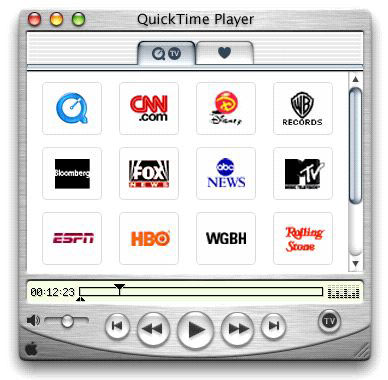
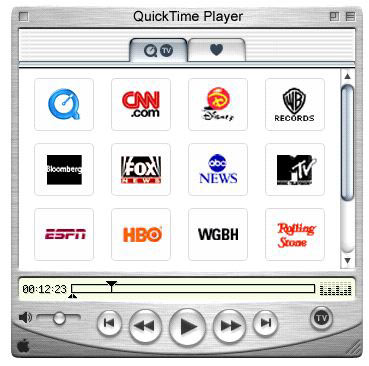
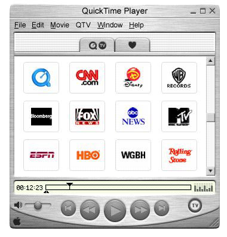
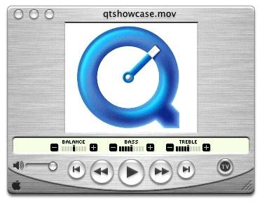
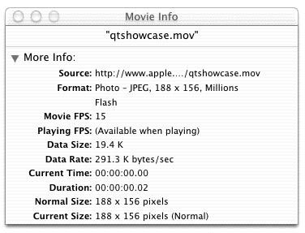
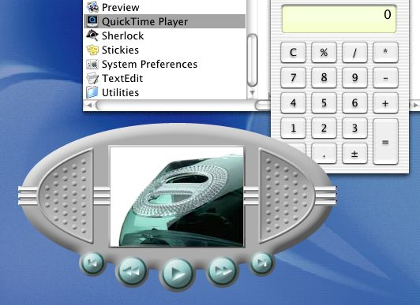
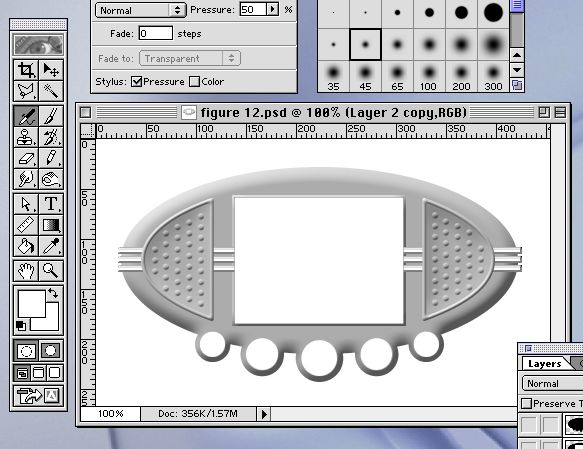
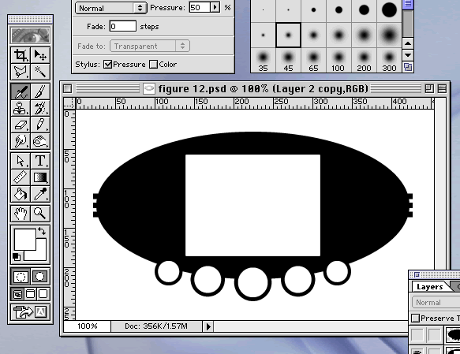
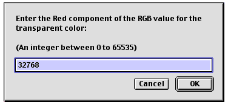
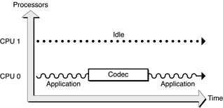

Legacy Document
Important: The information in this document is obsolete and should not be used for new development.
What’s New in QuickTime 5
Welcome to QuickTime 5.
This document provides a list of the changes, new features, and enhanced capabilities in this release of QuickTime. If you are a QuickTime API-level developer, content author, or Webmaster, you should read this document.
QuickTime 5 is planned as a series of incremental releases.
This release is QuickTime 5.0.1. This is the first general release of QuickTime 5 for Windows, Mac OS 8, and Mac OS 9. This release was preceded by a series of Public Previews.
A release of QuickTime 5 was included as part of the Mac OS X CD (ver 10.0), and is part of that operating system. It is not available as a separate download.
The current release was also preceded by QuickTime 5.0 RT, which was included on a limited number of Mac-only CDs. The current release (5.0.1) replaces QuickTime 5.0 RT.
There are minor differences among these three software releases, as explained in the section “Version Differences.”
In this section:
Major Release
Using Gestalt to Get the QuickTime Version
Resources and Other Documentation
Summary of Changes and Enhancements
QuickTime Player Changes
Media Skins
Digital Video (DV) Codec Optimizations
Real-Time Effects Support
New Latency APIs
Multiprocessor (MP) Support
New MP-Related Image Compression Manager APIs
QuickTime VR Authoring Components Added
A New Installer for Downloading Third-Party Components
How to Package QuickTime Components on Mac OS X
AppleScript Changes and Additions
MPEG 1 Playback
Flash 4
kActionFlashTrackDoButtonActions
kOperandFlashTrackVariable
QT Events
Importing a Flash Movie
QuickTime Music Architecture (QTMA)
New QuickTime VR Cubic Engine
Nonstandard Cubes
Gamma Processing APIs
Preferred Codec APIs
Media Sharing Support
New ‘vdig’ Flag Added
New Data Handler APIs
API to Determine Whether QuickTime Can Open a File
New Plugin Features
New QTML function
QuickTime for Java
SMIL Changes
Enhancements to Effects
Streaming Client
Wired Actions
XML Import
XML Event-Based Parsing
Major Release
QuickTime 5 is the first major release of QuickTime since the introduction of QuickTime 4.1. As such, this release includes a number of new features and enhancements that affect end users, authors, and application developers.
Some new features of QuickTime 5 apply to all three groups. QuickTime 5 now supports new media formats, for example, including Flash 4, DLS and Sound Font 2 audio files, and MPEG-1 playback on both Macintosh and Windows computers, including real-time streaming of MPEG audio and video.
End users will notice several new features, starting with a new user interface for playing QuickTime movies, with new video and audio controls. QuickTime Music (MIDI) playback can now be enhanced using DLS or Sound Font 2 audio samples. Access to Shoutcast streams is now available. Additionally, new “skip” protection provides improved streaming playback.
Movie and Web authors will find a number of enhancements, notably in AppleScript and QuickTime VR support, DV video compressor enhancements, new HTML embed tags, SMIL enhancements, and improved performance and quality of synthesis for the QuickTime Music Synthesizer. The editing and authoring interface for QuickTime Pro has been improved, adding menus and key commands for formerly “hidden” features. In addition, authors now have the ability to create movies using new media types, such as Flash 4, or MPEG-1 for Windows.
Perhaps most exciting for authors, however, is the introduction of “media skins” in QuickTime 5. Now you can customize the appearance and behavior of a movie when played in QuickTime Player. A media skin allows you to control the size and shape of the Player window and controls, as well as the appearance, width, and shape of any frame.
Applications developers will find extended Java support, with QuickTime for Java now included in a complete install of QuickTime 5. There are also new API functions, including a whole new broadcaster API for sending streams using QuickTime client software on Macintosh computers (it’s not just for servers anymore).
Notably for authors and developers, QuickTime 5 introduces a new third-party update mechanism designed to provide a registry of QuickTime components on an Apple server, so that developers can include their components in user downloads and QuickTime software updates on an as-needed, just-in-time basis.
Using Gestalt to Get the QuickTime Version
As always, the standard way for Apple developers to determine
which version of QuickTime is installed is by calling the Macintosh
Toolbox API Gestalt function
(this Mac OS function is included in QuickTime for Windows).
Listing 1-1 shows a code snippet that demonstrates how you can check the version of QuickTime that is installed –– in this case, QuickTime 5.0.1.
Listing 1-1 Determining which version of QuickTime is installed by calling the Gestalt function. The version installed here is QuickTime 5.0.1.
{ |
/* check the version of QuickTime installed */ |
long version; |
OSErr result; |
result = Gestalt(gestaltQuickTime,&version); |
if ((result == noErr) && (version >= 0x05018000)) |
{ |
/* we have version 5.0.1! */ |
} |
} |
Resources and Other Documentation
This document is intended to supplement the information provided in the QuickTime 4 API Reference and the QuickTime 4.1 delta documentation, which is available online at
http://developer.apple.com/documentation/quicktime/qtdevdocs/RM/newsframe.htm |
For other QuickTime developer documentation, you should refer to
http://www.apple.com/quicktime/developer/ |
For complete QuickTime API documentation, refer to
http://developer.apple.com/documentation/quicktime/qtdevdocs/RM/frameset.htm |
Updates to the QuickTime technical documentation Website are provided on a regular basis; developers can also subscribe to various mailing lists for the latest news and information.
To sign up for any of Apple’s Developer Programs, refer to
http://developer.apple.com/membership/index.html |
Summary of Changes and Enhancements
QuickTime 5.0.1 provides a number of new features and enhancements, in addition to a several bug fixes. These new features and enhancements are designed to extend QuickTime’s reach and capability as the premier player and multimedia authoring technology for Macintosh and Windows computers.
Enhancements
Improved QuickTime Player application User Interface (UI); new audio and video controls, as well as a new scrollable Channel window and Get Movie Properties dialog (among other enhancements). In the Pro (registered) version, there are now ordinary menu items for commands such as “Add Scaled,” that were previously hidden unless you pressed modifier keys, such as Shift, ctrl, alt, or Command.
The capability to customize the appearance of QuickTime Player by adding a “media skin” to your movie. A media skin specifies the size and shape of the window that the movie is displayed in, while also specifying which part of the window is draggable. A QuickTime movie does not have to be surrounded by a frame. No controls are displayed, except those embedded in the movie using Flash tracks or wired sprites.
Digital Video (DV) codec optimizations, both compression and decompression, for improved quality and performance on Power Macintosh G3 and Power Mac G4 computers.
Velocity Engine (AltiVec) and multiprocessor support for DV codecs.
Inclusion of the QuickTime VR Flattener extension as part of a Full Install of QuickTime, allowing export of VR panoramas in fast-start format with a selectable preview image (or grid), enhanced to support cubic VR as well as cylindrical VR.
A VR exporter that splits multinode VRs and generates HTML for URL linking, and a VR exporter for object compression.
Additions to AppleScript, including a new suite of editing features and commands. These features are useful for QuickTime authors who need to automate certain processes, such as batch preparation of QuickTime movies to include copyright information, hypertext links, or full-screen presentation.
Support for new SMIL attributes, such as clip-begin, clip-end, and qt:fullscreen.
Support for new Travelling Matte effects and gradient wipes, which are useful for application developers working in video and movies.
Changes to the Installer
Addition of a new Third-party QuickTime Component Downloader. This is designed to provide a registry of QuickTime components on an Apple server from third-party developers who want to include their components in user downloads and updates on an as-needed basis.
The Installer now recognizes previous installations of QuickTime for Java and will now update them, even during a Full Install.
Support for New Formats
Support for MPEG 1 playback, both local and streaming on Macintosh and Windows.
Introduction of a new QuickTime VR cubic playback engine.
Changes and improvements to the QuickTime Music Synthesizer, including support for industry-standard DLS (Downloadable Sound) and Sound Font 2 formats.
Other New Features
Additions and changes to QuickTime for Java –– including support for a new idling mechanism.
New EMBED tag parameters and URL extensions.
New API functions, including a broadcasting API for Mac OS that allows third-party developers to write broadcasting applications or add broadcasting to existing applications.
Addition of new wired actions and operands.
A new MIME type (.qtl=application/quicktimeplayer) that allows you to launch movies in QuickTime Player from a text link.
New XML importer allows you to embed QuickTime URLs in a small text file.
New ability to render effects and transitions in real time in DV format on Macintosh computers equipped with compatible hardware accelerator cards.
Version Differences
QuickTime 5 is currently available in three versions:
QuickTime 5.0.1 for Mac OS 8, Mac OS 9, and Windows
QuickTime 5 for Mac OS X
QuickTime 5.0 RT for Mac OS 8 and Mac OS 9
QuickTime 5.0.1 is the current release for Mac OS 8, Mac OS 9, and Windows. It replaces QuickTime 5.0 RT, which was distributed only on CD for Macintosh computers. QuickTime 5.0 RT has essentially the same feature set as QuickTime 5.0.1.
QuickTime 5 for Mac OS X does not currently support the following features:
Media skins
The complete set of broadcasting APIs
QuickTime VR authoring components
Hotpicks movie
The PictureViewer application (Mac OS X offers the Preview application in its place).
The complete set of QuickTime Player AppleScript features
QuickTime Player Changes
QuickTime 5 introduces a number of changes to the QuickTime Player application, including changes to the User Interface (UI). The appearance and behavior differ slightly for Mac OS X, Mac OS 9, and Windows. Changes are described as follows:
The Mac OS X version of QuickTime Player, shown in Figure 1-1, features the Aqua interface. Clicking the top-left middle yellow “minimize” button moves the Player into the dock. If a movie is playing, it continues to play in the dock.
The Mac OS 9 version (Figure 1-2) features the Platinum interface. Clicking the “minimize” box collapses the Player window so that only the title bar is visible. This pauses any playing movie.
The Windows version (Figure 1-3) is similar in appearance to the Mac OS 9 version, but with the Windows menu bar attached to the Player window, which is a change from previous versions. It includes the standard Windows control and placement. Clicking the “minimize” box puts an icon of the Player in the Windows task bar.
QuickTime VR also has redesigned controls (Figure 1-7), available on both Mac OS 9 and Mac OS X. One significant change is the “show hotspots” button, which now toggles between showing and hiding hotspots when clicked (previously, it showed hotspots only while being clicked). A new cubic playback engine is also provided in QuickTime 5, discussed in the section “New QuickTime VR Cubic Engine.” This feature enables the viewer to see all the way up and all the way down –– in effect, all six faces of a cube –– by clicking in a VR panorama.
Figure 1-1 The Mac OS X version of QuickTime Player with Aqua user interface and some of the available QuickTime TV Channels
Figure 1-2 The Mac OS 9 version of QuickTime Player with the Platinum user interface and QuickTime hot picks
Figure 1-3 The Windows version of QuickTime Player with some of the available QuickTime TV Channels
A number of UI changes are common to both Macintosh and Windows:
The Channel Drawer has been eliminated. Clicking the QTV button switches to a new scrollable window in the Player’s main display area, containing tabs for QuickTime TV channels and user Favorites.
A “hot picks” movie now opens as the default content of QuickTime Player, if the application is launched without a selected movie, and if the user is connected to the Internet when the application opens. Note that there is no hot picks Tab. To bring up the hot picks movie, a user must double-click the QuickTime logo in the QuickTime TV channels window.
When the user rolls the mouse over an icon in the QuickTime TV channels window or the Favorites window, the name of that channel or favorite appears in the LCD area below.
The controls drawer has been eliminated from the Pro version of QuickTime Player. The video controls are superimposed on the main display area, while the audio controls appear in the timeline controller area, and are accessed by the menu item Show/Hide Sound Controls. The audio controls (Balance, Bass, and Treble) are shown in Figure 1-4.
Figure 1-4 The QuickTime 5 Player application with audio controls that you can Show/Hide from a menu item in the Player
The step-forward and step-backward buttons that were in the controls drawer are gone, but the left and right arrow keys still perform these functions. To select and step simultaneously, hold the shift key down while using the left or right arrow key. Holding an arrow key down for more than 3 seconds causes it to go into “turbo” mode, allowing you to rapidly select a long section of a movie.
There is a new Show Movie Info item in the Windows menu. This opens a single window containing summary information about the frontmost movie. The information displayed includes some subset of the following:
Annotations –– Information such as title and copyright
Source –– Filename or URL of the current movie
Format –– Data or compression format of each track, or the track type
Data Size –– Size of the movie file
Data Rate –– Average data rate of the movie, or current data rate if playing
Current Movie Time –– Current movie time in Hours:Minutes:Seconds.Thirtieths
Duration –– Duration of the movie in Hours:Minutes:Seconds.Thirtieths
Normal Size –– Unscaled height and width of the movie in pixels
Current Size –– Current height and width of the movie in pixels
Bitrate and Streaming Quality –– for Streaming movies
The former Get Info dialog box has been renamed Movie Properties, and is now available only when QuickTime Player is registered (Pro version).
If the current movie contains a Chapter List, it now functions as a pop-up menu in QuickTime Player, just as it does in the QuickTime browser plugin.
The Movie Properties dialog box and the Show Movie Info window are shown in Figure 1-5 and Figure 1-6, respectively.
Figure 1-6 An example of the QuickTime 5 Movie Info window in Mac OS X. The Inspector shows the characteristics of the frontmost window.
If you are streaming a QuickTime movie, the bitrate will also appear in the Movie Info window shown in Figure 1-6.
QuickTime VR Controls
When QuickTime Player displays a QuickTime VR movie, it provides users with a set of controls to manipulate VR objects and panoramas. A VR panorama lets the user stand in a virtual reality space, such as the church cathedral illustrated in Figure 1-7, and explore immersively the dimensions of a full 360 panorama –– panning across, as well as zooming in and out of the panorama.
In QuickTime 5, authors can create VR panoramas in which users also have the ability to tilt up and down a full 180, so that you can see the ceiling of the cathedral as well as the floor in Figure 1-7. The actual horizontal and vertical range is determined by the panorama itself. To look left, right, up and down, you drag with the mouse across the panorama.
In addition to navigating a QuickTime VR movie by holding the mouse button down and dragging inside the panorama, the user can manipulate the panorama by clicking various buttons:
A go-back button. This allows the user to return to the previous node (a single viewpoint in a panorama). Clicking this button restores the previous static pan angle, tilt angle, and field of view. The button is enabled only for multinode (multiple viewpoint) panoramas.
A zoom-out button. This allows the user to zoom out. Holding down the mouse button while the cursor is over this control causes the field of view of the displayed node to increase, thereby making the object or panorama appear to move away from the viewer.
A zoom-in button. This allows the user to zoom in. Holding down the mouse button while the cursor is over this control causes the field of view of the displayed node to decrease, thereby making the object or panorama appear to move toward the viewer.
A hot spot display button. This allows the user to highlight the visible hot spots. A single click toggles hot spots on; another click toggles hot spots off. This is a change in behavior from previous hotspot buttons, which displayed hotspots only while the mouse button was held down.
In addition to these buttons, there is also a label display area (not shown in Figure 1-7) in which helpful information can be displayed. For instance, when the cursor is over one of the buttons, the button’s name appears in the label display area. Similarly, when the cursor is over a hot spot, the hot spot’s name (if it has one) appears in the label display area.
New Player Application Capabilities
In addition to the user interface changes, QuickTime 5 introduces new capabilities to the QuickTime Player application. These are described as follows:
If a complete installation is performed, QuickTime now includes the VR Flattener component. If a VR panorama is loaded in QuickTime Player, and the VR Flattener component is installed, the Export pop-up menu includes an item named Movie to Fast Start QuickTime VR Movie. Choose this item to export the panorama as a Fast Start VR movie with a preview. There will also be an item named either “Movie to QuickTime VR Movie 1.x” or “Movie to QuickTime VR Movie 2.x,” allowing you to convert your panorama from one format to the other.
In addition to exposing many more of QuickTime Player’s features to AppleScript in QuickTime 5 (see “AppleScript Changes and Additions” for more information), the features of the Plugin Helper application are now accessible through AppleScript extensions to QuickTime Player. You still need to use Plugin Helper to set plugin attributes manually, but you can use AppleScript and QuickTime Player to automate the task.
It is now possible to attach a “media skin” to a movie, which controls the appearance and behavior of the QuickTime Player 5 application when the movie is played. A media skin allows you to control the size and shape of the Player window, as well as the color, width, and texture of the frame (if any). It also eliminates the visible movie controller or VR controller, allowing you to design your own controls using wired sprites. This is discussed in more detail in the next section, “Media Skins.”
Media Skins
QuickTime Player normally displays movies in a rectangular display area within a draggable window frame. The frame has a brushed-metal appearance and rounded control buttons. The exact controls vary depending on the movie’s controller type, with most movies having the standard Movie Controller, and VR movies having the VR Controller.
If the movie’s controller is set to the None Controller, QuickTime Player displays the movie in a very narrow frame with no control buttons. This allows you to display a movie without controls, or to create your own controls using a Flash track or wired sprites.
Until now, however, QuickTime Player always displayed your movie in a rectangular display area surrounded by a frame of some kind, with the frame providing a draggable area for the viewer to relocate the movie on the desktop.
In QuickTime 5, you can customize the appearance of QuickTime Player by adding a media skin to your movie. A media skin specifies the size and shape of the window that the movie is displayed in. A media skin also specifies which part of the window is draggable. Your movie is not surrounded by a frame. No controls are displayed, except those that you may have embedded in the movie using Flash or wired sprites.
For example, suppose you’ve created a movie with a curved frame and wired sprite controls, as shown in Figure 1-8.
Now suppose you want to add a media skin that specifies a window the size and shape of your curved frame, and a draggable area that corresponds to the frame itself.
If the movie is then played in QuickTime 5, your movie appears in a curved window, as shown in Figure 1-9, with the areas that you have specified acting as a draggable frame, as if you had created a custom movie player application.
Figure 1-9 A skinned movie in QuickTime 5, which appears as if you had created a custom movie player application
Note that you don’t need to assign the None Controller to a movie with a media skin (although you can). If the VR Controller or Movie Controller is assigned to your movie, the controller’s keyboard equivalents operate when your window is active, even though the controller is not displayed. The space bar starts and stops a linear movie, for example, while the shift key zooms in on a VR panorama. You can disable this feature by assigning the None Controller.
Media skins have no effect when a movie is played by the QuickTime browser plugin or other QuickTime-aware applications, such as Adobe Acrobat. However, developers can modify their applications to recognize movies that contain Media Skins, and to retrieve the shape information.
Creating Media Skins
A media skin can be added to a movie using a text editor, a graphics program such as Adobe Photoshop, and QuickTime Player (Pro version).
In a typical case, you might want to replace QuickTime Player’s brushed-metal frame with one of your own design, as shown in Figure 1-10. Here are the steps that you would follow:
Create an image of your new frame using a graphics program, or perhaps scan in a photo of an actual device.
Figure 1-10 A newly created frame with space for controls and movie playback that replaces QuickTime Player’s brushed-metal frame
Open this image in QuickTime Player and add it to an existing movie as a background image, as shown in Figure 1-11.
You would also typically create your own movie controls, using Flash or wired sprites (and a wired sprite editor such as LiveStage Pro or Adobe’s GoLive), and add these as a Flash track or sprite track on top of your frame image, as shown in Figure 1-12. Call this
Framed.mov.
Create a mask image the size and shape of your frame (Figure 1-13). This image defines the window created when your movie plays. The image should be black where you want your window, and white elsewhere. The image can be a BMP, GIF, PICT, or any other format that QuickTime understands. Call this
WinMask.pct.
Create a second mask image the size and shape of the draggable part of your frame (Figure 1-14). Typically, this would be the same as your first mask, with white areas where your text, video, and controls will appear. Again, this should be saved as a black-and-white image in a format that QuickTime can display. Call this
DragMask.pct.
Figure 1-14 A second mask image which is the size and shape of the draggable part of your frame
Using a text editor, create a small file with the following syntax:
<?xml version="1.0"?>
<?quicktime type="application/x-qtskin"?>
<skin>
<movie src="Framed.mov"/>
<contentregion src="WinMask.pct"/>
<dragregion src="DragMask.pct"/>
</skin>
Save as plain text, with the
.movfile extension. Call thisSkinXML.mov.Open
SkinXML.movusing QuickTime Player. Save as a self-contained movie. Call thisFinished.mov.
You can now put Finished.mov on
a CD, email it to a friend, or embed a link to it in a Web page.
You can target the link to open your movie in QuickTime Player using
the EMBED tag. For example:
<EMBED SRC="poster.qtif" TYPE="image/x-quicktime" HEIGHT=120 WIDTH=160 HREF="Finished.mov" TARGET="quicktimeplayer" > |
This tag would embed a QuickTime image file named poster.qtif in
a Web page. If the viewer clicks the image, QuickTime will launch Finished.mov in
the QuickTime Player application.
To launch Finished.mov automatically,
without the viewer clicking anything, you add AUTOHREF="true" to
the EMBED tag.
The example just given uses a static image as a custom frame, but remember: a media skin just provides masks to use when displaying your movie. Any visual media type can show through the masks, including motion video and special effects, such as those possible with the QuickTime cloud or fire effects.
Any part of your movie can be made into a draggable region. However, tracks that respond to mouse events, such as VR panorama tracks or wired sprite tracks, should not be covered by a drag mask — the drag behavior prevents mouse events from reaching underlying tracks.
Current Limitations
Currently, a movie can have only one skin track. You cannot dynamically enable or disable skin tracks. The skin track’s masks are stored in the movie file as 1-bit pixel depth PICTs and cannot be changed dynamically.
Note that skins are not available in the current release of Mac OS X.
Adding Media Skins Using the QuickTime API
You can also add a media skin to a movie programatically –– for example, to enhance a movie editing application.
You could do this by mimicking the steps just described in the section “Creating Media Skins.” That is, you can generate a movie file, a pair of black-and-white image files, and a small XML text file that points to them, then call a movie importer to put them all together, flatten and save.
But it’s simpler to add a media skin to a movie in memory without going through an XML skin importer. The process is as follows:
Locate two black-and-white PICT files, or create two PICT images in RAM, to act as a window region mask and a drag region mask (You can use graphic importer and exporter components to convert a BMP or GIF to a PICT). See Figure 1-13 and Figure 1-14 for examples of these kinds of images.
Create a
PicHandlethat points to each mask image.Add a new track to the movie.
Add a media of type
'skin'to the new track.Tell the media handler to put the masks in a public resource.
Flatten and save.
The code snippet shown in Listing 1-2 provides a general outline of how you can add a media skin programmatically to a QuickTime movie, and is intended primarily as a guide to the process –– not as actual working code.
Listing 1-3, however, is working code that walks you through the various steps you need to follow in order to add media skins programmatically to a QuickTime movie.
Listing 1-2 A general outline of how you add a media skin to a QuickTime movie
//Adding a skin without using the importer |
// Somehow create a picture handle: |
PicHandle winRgnHndl = nil; |
PicHandle dragRgnHndl = nil; |
winRgnHndl = MyMagicalCode(); |
dragRgnHndl = MyMagicalCode(); |
// create a new track |
theTrack = NewMovieTrack(myMovie, ((Fixed)movieBox.right) << |
((Fixed)16, movieBox.bottom) << 16, 0); |
// must have someplace for the sample data to go |
// could use BeginMediaEdits, or... |
// create a cool handle that the HandleDataHandler can deal with, |
// so I can add this stuff in ram without needing a file |
dataRef = NewHandleClear(5); |
atomHeader[0] = EndianU32_NtoB(8); |
atomHeader[1] = EndianU32_NtoB('data'); |
PtrAndHand(atomHeader, dataRef, 8); |
// add a skin media structure to the movie track |
theMedia = NewTrackMedia(theTrack, 'skin', movieTimeScale, dataRef, |
HandleDataHandlerSubType); |
// retrieve media handler reference so we can call it |
mh = GetMediaHandler(theMedia); |
// tell the media handler to add the masks |
// 'skcr' is skin content region |
// 'skdr' is skin drag region |
// final parameter is length -- set to 0 for an allocated handle |
err = MediaSetPublicInfo(mh, 'skcr', winRgnHndl, 0); |
if (err) goto bail; |
err = MediaSetPublicInfo(mh, 'skdr', dragRgnHndl, 0); |
if (err) goto bail; |
// dispose of the Handle when done |
DisposeHandle(dataRef); |
dataRef = nil |
Listing 1-3 Adding media skins programmatically to a QuickTime movie
OSErr QTSkin_AddSkinTrack (Movie theMovie){ |
Track myTrack = NULL; // the skin track |
Media myMedia = NULL; // the skin track's media |
Rect myRect; |
MediaHandler myHandler = NULL; |
PicHandle myContentPic = NULL; // window mask |
PicHandle myDragPic = NULL; // drag mask |
OSErr myErr = paramErr; |
if (theMovie == NULL) |
goto bail; |
// elicit the two pictures we need from the user |
myContentPic = QTSkin_GetPicHandleFromFile(); |
if (myContentPic == NULL) |
goto bail; |
myDragPic = QTSkin_GetPicHandleFromFile(); |
if (myDragPic == NULL) |
goto bail; |
// get the movie's dimensions |
GetMovieBox(theMovie, &myRect); |
MacOffsetRect(&myRect, -myRect.left, -myRect.top); |
// create the skin track and media |
myTrack = NewMovieTrack(theMovie, FixRatio(myRect.right, 1), |
FixRatio(myRect.bottom, 1), kNoVolume); |
if (myTrack == NULL) |
goto bail; |
myMedia = NewTrackMedia(myTrack, FOUR_CHAR_CODE('skin'), |
GetMovieTimeScale(theMovie), NULL, 0); |
if (myMedia == NULL) |
goto bail; |
// find a media handler that understands skins |
myHandler = GetMediaHandler(myMedia); |
if (myHandler == NULL) |
goto bail; |
// tell the media handler to add |
// the skin content picture |
myErr = MediaSetPublicInfo(myHandler, FOUR_CHAR_CODE('skcr'), |
(void *)myContentPic, 0); |
if (myErr != noErr) |
goto bail; |
// now add the skin drag picture |
myErr = MediaSetPublicInfo(myHandler, FOUR_CHAR_CODE('skdr'), |
(void *)myDragPic, 0); |
if (myErr != noErr) |
goto bail; |
// note: the last parameter passed to |
// MediaSetPublicInfo is the data size; |
// pass 0 for an allocated handle |
// add the media to the track |
myErr = InsertMediaIntoTrack(myTrack, 0, 0, |
GetMediaDuration(myMedia), fixed1); |
// skin tracks should be disabled... |
SetTrackEnabled(myTrack, false); |
bail: |
if (myContentPic != NULL) |
KillPicture(myContentPic); |
if (myDragPic != NULL) |
KillPicture(myDragPic); |
return(myErr); |
} |
Adding Custom Media Skins with AppleScript
QuickTime 5 provides additional AppleScript support in the QuickTime Player application, which is discussed in the section “AppleScript Changes and Additions.” The QuickTime Player scripting dictionary, for example, contains new commands and properties that can be used to automate many movie-editing and playback tasks.
This section describes how you can create an AppleScript droplet with a custom media skin (the code for this droplet is already supplied). Droplets are special AppleScript applications that respond to files and folders dragged onto their icon. Each droplet has properties and parameters that can be set by double-clicking the droplet and clicking the “Set Prefs” button in the main dialog.

In this example, the droplet automates the process of creating a QuickTime movie with a media skin.
Refer to <http://www.apple.com/applescript/qtas5/qtas5p2.htm> for
a collection of example
scripts that are available in QuickTime 5.
Media Skin Droplet
The script of the media skin droplet assembles the components of a media skin movie and saves the results as a self-contained QuickTime movie file. This section describes how the script works and the steps required to use the example files included with the script. Note that this script only processes standard QuickTime movie files of file type “MooV”.
Creating the Media Skin Image Files
To create a custom media skin for your movies, you need to create three specific image files:
The media skin. This image (Figure 1-15) will be the window in which the movie is played. It can be of nearly any shape or size.
In the example included with this script, there is a simple media skin file that adds a standard border and title bar to the movie. This image is designed to display a movie having a width of 240 pixels and a height of 180 pixels. The blue region defines the area to display the video content of the movie.
Note that the offset of the top left of the blue region is 6 pixels horizontally and 22 pixels vertically from the top left of the media skin image. The script uses these measurements in order to place the video track in the corrext position over the media skin background. Note also that the size and offset info has been overlaid on the media skin image.
The drag mask image. This image (Figure 1-16) defines the areas of the window that can be clicked by the user to drag the window. The black regions of the image will be the clickable areas of the finished window. In this example, the title bar and sides of the movie will be the drag regions.
The window mask image. This image (Figure 1-17) defines the visible area of the media skin window. Black regions will be visible to the user, white areas will be invisible. In this example, the entire area defined by the media skin image will be visible.
Transparent Overlay Media Skins
If you want the media skin to partially cover the source video, you need to fill the area to be transparent with a solid color of a specific RGB value, such as White, Black, %50 Gray, or 100% Blue.
In the following example image (Figure 1-18), the QuickTime Q has been filled with %50 Gray. The script preferences can be set to adjust the track’s operation color and transfer mode for this value, and the center of the Q image will become transparent when the skinned movie is created.

Setting the Script Preferences
The script droplet relies on preferences, set by the user, to locate and manipulate the essential files. This particular script is designed to look for the various image files in the same folder as the droplet. If the essential image files are not in the same folder as the script, the script will not execute.
You can make copies of this droplet to be placed in other folders containing your various media skin files. You set the preferences for each droplet to work with its neighbor files.
To set the preferences for the droplet, you double-click its icon in the Finder to summon the status dialog (Figure 1-19). The dialog shows the current settings for the various script preferences. Click the “Set Prefs” button to set each of the script preferences.
The first three preferences are for identifying the image files to be used by the script when constructing the media skin movie.
In the first dialog (Figure 1-20), enter the name of the image file which will be used as the media skin background. You may either enter the name in the input field or click the “Choose File” button to locate the appropriate file. The script will then place the name of the chosen file in the input field for you.
After you have entered the name of the appropriate media skin image file (Figure 1-21), click the “OK” button to proceed.
You repeat this process in the forthcoming dialogs for identifying the window mask image and the drag mask image.
After inputting the names of the other files, two successive dialogs appear, asking you to enter the offset to be used to position the video track against the chosen media skin background. These measurements depend on the design of your media skin.
In the first dialog (Figure 1-22), you enter the horizontal offset (in pixels) from the left of the media skin image to the left of the video display area.
In the second dialog (Figure 1-23), you enter enter the vertical offset (in pixels) from the top of the media skin image to the top of the video display area.
The next dialog (Figure 1-24) determines if you want the media skin image to be placed behind the source video or in front of the source video. Media skin images placed over the source video must have areas of a solid color that will be made transparent during the creation of the skinned movie.
Figure 1-24 The dialog that asks if you want the media skin placed behind the source video or in front of it
If you clicked the “Yes” button, a list dialog (Figure 1-25) appears from which you can choose the color which the script will make transparent. If your overlay color is not in the list, you may enter its RGB values individually by clicking the “Other” button at the bottom of the list dialog.
If you clicked the “Other” button, a series of three dialogs will prompt you for each of the RGB values for the color to be made transparent. Each color is specified as a list of individual Red, Green, and Blue values: {Red value, Green value, Blue value}. Each individual RGB color component is an integer between 0 and 65535, with 0 being the minimum and 65535 being the maximun value.
For example, White is {65535, 65535, 65535}, Black is {0, 0, 0}, 100% Red is {65535, 0, 0}, 50% Gray is {32768, 32768, 32768}, etc. Note that the values you enter in these dialogs must exactly match those of the area in the overlay image that is meant to be transparent.
Figure 1-26 One of three dialogs that prompt you for each of the RGB values for the color to be made transparent, in this case the Red component
The final two preference dialogs are for setting the playback properties.
Click the “Yes” button if you want the movie to automatically start playing when opened.
Click the “Yes” button if you want the movie to automatically close when it has finished playing.
After setting the property, the script will return to the status dialog (Figure 1-29). Click the “Done” button to exit the script.
If the media skin image is set to overlay, the operation color name or value will be displayed in the status dialog (Figure 1-30).
Running the Script
To use the script, you drag a movie file, or multiple files, or folders of movie files onto the droplet. A dialog (Figure 1-31) appears prompting you for the destination folder for the finished files.
Once chosen, a media skin copy of each dragged-on movie is created and placed into this folder.
Completed Examples
Figure 1-32 (top) shows a completed example of a basic 240 x 180 skinned QuickTime movie, with standard border and title. In this case, the airplane is shown flying diagonally from the lower portion of the screen to the upper. Figure 1-32 (bottom) shows a completed example of a 144 x 108 overlaid skinned Q with the airplane flying inside the Q.
Figure 1-32 Two examples of skinned movies, one (top) with a standard border and title bar, the other (bottom) with a QuickTime Q overlaid
Digital Video (DV) Codec Optimizations
QuickTime 5 includes the following:
Digital video (DV) codec optimizations that are designed to provide significant performance and quality improvements over previous versions.
Support for optimized high-quality decompression on Power Mac G3 and G4 computers. This support is designed:
to improve speed for rendering in r408 and v408 formats.
to improve speed for playback to YUV accelerated windows.
to improve speed for high-quality, single field video.
Improved quality compression in medium and best-quality cases for Power Mac G3 and Power Mac G4 computers.
Improved quality of normal (low) quality decompression on Power Mac G4 computers.
These enhancements are aimed at developers and content authors using tools such as video editing applications.
High-Quality Decompression
Both scalar and vector codec quality has been improved significantly in this release. There are performance improvements as well. The code is optimized in both scalar and vector codecs to pack pixels directly to the output format, which provides a significant improvement in performance for r408.
QuickTime 5 supports optimized single field decompression,
which improves performance for cases when the single field hint
(hintsSingleField) is
set. The vector codec now includes gamma correction when decompressing
to the screen.
Improved Compression Quality and Performance
Overall, there is a significant improvement in both compression quality and performance. Special attention has been paid to make sure that existing DV content can be recompressed with few additional artifacts.
Improved Low-Quality Vector Decode
The quality of low-quality decode on vector machines (400 MHz or greater) has been improved, while also improving performance.
Addition of Multiprocessor Support
Multiprocessor support has been enabled for vector decode (i.e., high quality, low quality, playback and scrub/render). Multiprocessor support has also been enabled for encode in the vector case. For the actual DV operation, the results are nearly two times faster on a two CPU computer than the same code running in non-multiprocessor mode.
Real-Time Effects Support
QuickTime 5 includes the following:
Support for real-time effects hardware (i.e., third-party video cards).
Support for codecs with hardware latency.
Improved support for third-party hardware effects.
New Latency APIs
This section discusses the new latency APIs available in QuickTime 5.
Overview
QuickTime 5 has defined new APIs to retrieve the video and sound latencies from Video Codecs and Sound Output Components.
The latency values are used to separately offset the timebases of the video and/or sound media from that of the movie timebase. The offsets are based on pipeline delays within the implementation of the sound or video components. For example, given some video hardware that has several stages that will take five frames to go through between the start of decompression and when the data is displayed, the video codec should report a latency of five frames, so that QuickTime will schedule the frames in advance. The codec is responsible for reporting a latency that represents its accurate pipeline in order to maintain audio and video synchronization.
Usage
Applications
Some performance implications occur when dealing with implementations that have latency. Notably, starting and stopping a movie requires extra time since the media’s timebases will start before the movie timebase. When latency is present, an application should avoid setting the movies rate directly from positive to negative without going through zero first, since otherwise the latency will not be correctly taken into account (and video and sound will not be synchronized thereafter).
A limitation in the current implementation is that QuickTime does not support mixing different video latencies between different codecs. This limitation is within QuickTime and cannot be overcome by the codecs. Applications should avoid creating movies that mix multiple types of video codecs if the codecs have different latencies.
Video Codecs
Video codecs for a given hardware should report the actual latency time required for the hardware.
Sound Output Components
Sound Output Components for a given hardware should report the actual latency time required for the hardware.
Video Codec Latency API
The following API is used by QuickTime to retrieve the video latency:
ImageCodecGetDecompressLatency
Retrieves the video latency from the specified video codec.
pascal ComponentResult ImageCodecGetDecompressLatency(ComponentInstance ci, TimeRecord * latency);
Parameters
- ci
Specifies the image compressor component for the request.
- latency
Pointer to a time record containing the latency required for that codec.
Discussion
The following code snippet shows an example implementation of this function:
pascal ComponentResult myCodecGetDecompressLatency(myCodecGlobals *glob, |
TimeRecord *latency) |
{ |
OSErr result = paramErr; |
// Example setting 33 ms latency |
if (latency != nil) { |
latency->value.hi = 0; |
latency->value.lo = 33; // latency value |
latency->scale = 1000; // 1 ms scale |
latency->base = nil; |
result = noErr; |
} |
return result; |
} |
Availability
- Available in Mac OS X v10.0 and later.
Declared In
ImageCodec.h
Sound Output Latency API
Retrieves the audio latency from the specified sound output component.
The new selector siOutputLatency for
the SoundComponentGetInfo function
is used by QuickTime to retrieve the sound latency. (The infoPtr parameter
points to a time record.)
#define siOutputLatency ‘olte’ |
The following code snippet shows an example implementation of this selector:
static pascal ComponentResult mySoundGetInfo(SoundComponentGlobalsPtr globals, SoundSource sourceID, OSType selector, void *infoPtr) |
{ |
ComponentResult result = noErr; |
PrefStructPtr prefsPtr; |
prefsPtr = *(globals->prefsHandle); |
switch (selector) { |
case siSampleSize: // return current sample size |
*((short *) infoPtr) = (short)prefsPtr->sampleSize; |
break; |
case siOutputLatency: // return the sound output latency |
// in this example, 25 ms |
if (infoPtr != nil) { |
infoPtr->value.hi = 0; |
infoPtr->value.lo = 25; // sound latency |
infoPtr->scale = 1000; // 1 ms scale |
infoPtr->base = nil; |
} |
break; |
. . . |
} |
Multiprocessor (MP) Support
QuickTime 5 provides support for accelerating video compression and decompression on multiprocessor computers, such as the Power Mac G4 MP.
Image compressor and decompressor components must be revised to take advantage of MP. There are two ways to approach this. If the component is modified to split a single compression or decompression operation into several MP tasks, this will improve performance for all applications. Some algorithms are not easily divided into independent units of work, however, so this is not always feasible. Alternatively, components may be modified so that they are able to work asynchronously and permit the application to continue working in the blue task (the MP task on Mac OS 9) while work is in progress.
If the codec is not written to take advantage of MP, then processing work will run in the application’s task, as illustrated in Figure 1-33. (On Mac OS 9, this MP task is called the blue task.)
Figure 1-33 If your codec doesn’t take advantage of MP, processing work runs in the application’s task.
Note: This diagram is intended as a conceptual aid only. In reality, all tasks, including the blue task, may migrate between processors as necessary.
Now suppose the codec is modified to create a number of MP tasks and split each compression or decompression operation between them. This is illustrated in Figure 1-34. Assuming no other MP tasks are running, the total time taken for the operation could be decreased by a factor of up to the number of processors –– for example, on a two-processor machine, the time taken could be halved.
The client application does not need to have been modified to take advantage of such an accelerated component. As on a single-processor computer, the compression or decompression request does not return until after it is complete.
In QuickTime 5, the DV compressor and decompressor components have been modified to divide their work between a number of processors in this manner.
Some compression or decompression algorithms do not lend themselves to such division. Often there may be major data dependencies between sub-stages that mean that one step cannot be started until the previous one is complete.
In such a case, the codec can often still be modified to support multiprocessor computers by performing its work in a single MP task while the application continues to execute in its own task. Rather than accelerating a single operation, this increases the number of operations that may be performed at once. In order to see an overall performance improvement, the application must call asynchronous versions of the compression or decompression APIs. This is illustrated in Figure 1-35.
When the operation is complete, the application’s asynchronous
completion routine is called. Completion routines are often called
at deferred task time, so they must be written with care not to
make any calls that might move or purge memory. (See Technote 1104, “Interrupt-Safe
Routines,” at http://developer.apple.com/technotes/tn/tn1104.html for more
information on this topic.)
Enabling Asynchronous MP Decompression Using the Base Decompressor
The Base Decompressor, which has been available since QuickTime 3.0, is designed to simplify the job of writing an Image Decompressor. It deals with the job of managing asynchronous scheduled decompression, manages the queue safely, and avoids synchronization issues.
In QuickTime 5, the Base Decompressor has been extended to simplify making an image decompressor component able to perform asynchronous decompression in a single MP task. The JPEG, H.263, Cinepak, and Video decompressors use this mechanism to run asynchronously. The H.263 compressor has been similarly modified to run asynchronously.
If you have a decompressor that uses the base codec, all you
need to do to support the asynchronous MP mode is to implement the ImageCodecGetMPWorkFunction function.
Your implementation should call your base decompressor instance’s ImageCodecGetBaseMPWorkFunction function,
and pass to it a UPP for your DrawBand function:
pascal ComponentResult |
ExampleCDGetMPWorkFunction( |
ExampleSubDecompressorGlobals *storage, |
ComponentMPWorkFunctionUPP *workFunction, void **refCon) |
{ |
if( 0 == storage->drawBandUPP ) |
storage->drawBandUPP = |
NewImageCodecMPDrawBandUPP( ExampleCDDrawBand); |
return ImageCodecGetBaseMPWorkFunction(storage->delegateComponent, |
workFunction, refCon, |
storage->drawBandUPP, storage); |
} |
If you implement the ImageCodecGetMPWorkFunction selector,
your DrawBand function
must be MP-safe. (MP safety is an even stricter condition than interrupt
safety. As well as not calling routines that may move or purge memory,
you may not make any calls which might cause 68K code to be executed.
Ideally, your DrawBand function
should not make any API calls whatsoever.)
Taking Advantage of Asynchronous MP Codecs in Your Application
QuickTime will automatically call a codec asynchronously when
you’re playing a movie. If your application calls the Image Compression
Manager directly to perform compression or decompression operations,
you can pass a completion routine to CompressSequenceFrame or DecompressSequenceFrame/S/When to
enable asynchronous operation. (If the codec does not support asynchronous
operation, the API will run synchronously but call your completion
routine before returning.)
If your application calls the Standard Compression component
to perform image compression, you’ll need to call a new API variant, SCCompressSequenceFrameAsync,
which is new with QuickTime 5 and supports completion routines.
While this is running, you should occasionally call SCAsyncIdle from
system task time.
Note that the H.263 compressor has been modified to run asynchronously if requested.
SCCompressSequenceFrame
This function compresses a single frame in a sequence-compression operation. You must call this function once for each frame in the sequence, including the first frame.
This function is available in previous versions of QuickTime.
pascal ComponentResult SCCompressSequenceFrame (ComponentInstance ci, PixMapHandle src, const Rect *srcRect, Handle *data, long *dataSize, short *notSyncFlag);
Availability
- Available in Mac OS X v10.0 and later.
Declared In
QuickTimeComponents.h
SCCompressSequenceFrameAsync
This is an asynchronous variant of SCCompressSequenceFrame which
accepts a completion routine.
SCCompressSequenceFrameAsync (ComponentInstance ci, PixMapHandle src, const Rect * srcRect, Handle * data, long * dataSize, short * notSyncFlag, ICMCompletionProcRecordPtr asyncCompletionProc);
Discussion
If you pass a nil completion routine, this routine behaves
like SCCompressSequenceFrame.
While performing asynchronous compression with SCCompressSequenceFrameAsync,
you should occasionally call SCAsyncIdle.
This gives the standard compression component an opportunity to
restart its compression operation if it needs to force a key frame.
Availability
- Available in Mac OS X v10.0 and later.
Declared In
QuickTimeComponents.h
SCAsyncIdle
SCAsyncIdle (ComponentInstance ci);
Availability
- Available in Mac OS X v10.0 and later.
Declared In
QuickTimeComponents.h
New MP-Related Image Compression Manager APIs
The following new multiprocessor-related APIs, which are part of the Image Compression Manager, have been introduced:
The functions
ICMSequenceSetInfoandICMSequenceGetInfo.The constants
kICMSequenceTaskWeightandkICMSequenceTaskName.The
taskWeightandtaskNamefields ofCodecCompressParamsandCodecDecompressParams.
The functions ICMSequenceSetInfo and ICMSequenceGetInfo are
general property-setters for compression and decompression sequences.
They provide support for two properties, kICMSequenceTaskWeight and kICMSequenceTaskName,
which allow ICM clients to request that multiprocessor tasks assisting
compression and decompression operations use specific task weights
and task names.
The task name has no performance impact, but it can be helpful while debugging.
If your compressor or decompressor component creates MP tasks
and the taskWeight and/or taskName fields
of the CodecCompressParams or CodecDecompressParams structures
are nonzero, you should assign the MP tasks weights and/or names
using the MPSetTaskWeight and/or MPSetTaskType routines.
The compressedDataSize field
has also been added to the CodecCompressParams field.
This provides a safer way for asynchronous compressors to return
the size of the compressed frame data. (Previously, compressors
had to return the size in a field of the image description, which
can be an unlocked handle.)
Note that Apple’s multiprocessing APIs provide support for both co-operatively scheduled tasks and preemptively scheduled tasks. The APIs for preemptively tasks allow applications to create symmetrically scheduled preemptive tasks that can be run on a single processor machine, and will take full advantage of multiple processors when they are installed.
For more information, refer to http://developer.apple.com/macos/multiprocessing.html
QuickTime VR Authoring Components Added
QuickTime 5 includes the addition of three QuickTime VR authoring components. These are
A QTVR Flattener, which is a movie export component that converts an existing QuickTime VR single node movie into a new movie optimized for the Web.
All three components are contained in the file QuickTime VR Authoring and are installed if the user performs a Select All in the Custom Install option.
As movie exporters, these authoring components can be demonstrated using the QuickTime Player application, QuickTime Pro, or a custom application by opening a QuickTime VR movie and then choosing Export from the File menu. You can then choose the particular exporter by selecting it from the Export: popup menu in the Export File Dialog.
Menu names that appear in the UI (subject to change) are:
Movie to Fast-Start QuickTime VR movie (the Flattener).
Appears for all single node panorama and object movies.
Movie to Separate Single-Node Movies (The Multinode Splitter).
Appears only for 2.0 format multinode movies.
Movie to QuickTime VR Object Movie (Object Movie Compressor).
Appears only for 2.0 format object movies.
Once an Export method is selected, you can click the Options button to bring up a dialog where you can choose options specific to the given exporter.
The QTVR Flattener
The QTVR Flattener is a movie export component that converts an existing QuickTime VR single node movie into a new movie that is optimized for the Web. The flattener re-orders media samples; and for panoramas the flattener creates a small preview of the panorama. When viewed on the Web, this preview appears after 5% to 10% of the movie data has been downloaded, allowing users to see a lower-resolution version of the panorama before the full resolution version is available.
In QuickTime 5, this QTVR Flattener has been enhanced. There is a new implementation of tile ranking that works with horizontal and cubic panos, and also with two-dimensional tiling. The result is that panoramas appear to come in faster.
To use the QTVR Flattener from your application, you first
create a QuickTime
VR movie, then open the QTVR Flattener component and call the MovieExportToFile routine,
as shown in Listing 1-4.
Listing 1-4 Using the QTVR flattener
ComponentDescription desc; |
Component flattener; |
ComponentInstance qtvrExport = nil; |
desc.componentType = MovieExportType; |
desc.componentSubType = MovieFileType; |
desc.componentManufacturer = kQTVRFlattenerManufacturer; |
desc.componentFlags = 0; |
desc.componentFlagsMask = 0; |
flattener = FindNextComponent(nil, &desc); |
if (flattener) qtvrExport = OpenComponent (flattener); |
if (qtvrExport) |
MovieExportToFile (qtvrExport, &myFileSpec, myQTVRMovie, nil, 0, 0); |
The code snippet shown in Listing 1-4 creates a flattened
movie file specified by the myFileSpec parameter.
If your QuickTime VR movie is a panorama, the flattened movie file includes
a quarter size, blurred JPEG, compressed preview of the panorama
image.
Note: The constants MovieExportType and MovieFileType used
in Listing 1-4 are
defined in the header files QuickTimeComponents.h and Movies.h, respectively,
and are defined as 'spit' and 'MooV'.
Note: The various authoring
atom type constants can be found in the 5.0 version of QuickTimeVRFormat.h.
Presenting Users with the QTVR Flattener Dialog Box
You can present users with the QTVR Flattener’s own dialog box. This allows users to choose options such as how to compress the preview image or to select a separate preview image file.
To show the dialog box, use the following line of code:
err = MovieExportDoUserDialog (qtvrExport, myQTVRMovie, nil, 0, 0, &cancel); |
If the user cancels the dialog box, then the Boolean cancel
is set to true.
Communicating Directly with the Component
If you don’t want to present the user with the flattener’s
dialog box, you can communicate directly with the component by using
the MovieExportSetSettingsFromAtomContainer routine
as described next.
If you want to specify a preview image other than the default,
you need to create a special atom container and then call MovieExportSetSettingsFromAtomContainer before
calling MovieExportToFile.
You can specify how to compress the image, what resolution to use, and
you can even specify your own preview image file to be used. The
atom container you pass in can have various atoms that specify certain
export options. These atoms must all be children of a flattener
settings parent atom.
The preview resolution atom is a 16-bit, big-endian value
that allows you to specify the resolution of the preview image.
This value, which defaults to kQTVRQuarterRes,
indicates how much to reduce the preview image.
The blur preview atom is a Boolean value that indicates whether
to blur the image before compressing. Blurring usually results in
a much more highly compressed image. The default value is true.
The create preview atom is a Boolean value that indicates
whether a preview image should be created. The default value is true.
The import preview atom is a Boolean value that is used to
indicate that the preview image should be imported from an external
file rather than generated from the image in the panorama file itself.
This allows you to have any image you want as the preview for the panorama.
You can specify which file to use by also including the import specification atom,
which is an FSSpec data
structure that identifies the image file. If you do not include this
atom, then the flattener presents the user with a dialog box asking
the user to select a file. The default for import preview is false. If
an import file is used, the image is used at its natural size and
the resolution setting is ignored.
Sample Atom Container for the QTVR Flattener
The sample code in Listing 1-5 creates an atom container and adds atoms to indicate an import preview file for the flattener to use.
Listing 1-5 Specifying a preview file for the flattener to use
Boolean yes = true; |
QTAtomContainer exportData; |
QTAtom parent; |
err = QTNewAtomContainer(&exportData); |
// create a parent for the other settings atoms |
err = QTInsertChild (exportData, kParentAtomIsContainer, |
kQTVRFlattenerSettingsParentAtomType, 1, 0, 0, nil, &parent); |
// Add child atom to indicate we want to import the preview from a file |
err = QTInsertChild (exportData, parent, |
kQTVRFlattenerCreatePreviewAtomType, 1, 0, |
sizeof (yes), &yes, nil); |
// Add child atom to tell which file to import |
err = QTInsertChild (exportData, parent, |
kQTVRFlattenerImportPreviewAtomType, 1, 0, |
sizeof (previewSpec), &previewSpec, nil); |
// Tell the export component |
MovieExportSetSettingsFromAtomContainer (qtvrExport, exportData); |
Overriding the compression settings is a bit more complicated. You need to open a standard image compression dialog component and make calls to obtain an atom container that you can then pass to the QTVR Flattener component.
Listing 1-6 Overriding the compression settings
ComponentInstance sc; |
QTAtomContainer compressorData; |
SCSpatialSettings ss; |
sc = OpenDefaultComponent(StandardCompressionType,StandardCompressionSubType); |
ss.codecType = kCinepakCodecType; |
ss.codec = nil; |
ss.depth = 0; |
ss.spatialQuality = codecHighQuality |
err = SCSetInfo(sc, scSpatialSettingsType, &ss); |
err = SCGetSettingsAsAtomContainer(sc, &compressorData); |
MovieExportSetSettingsFromAtomContainer (qtvrExport, compressorData); |
The QTVR Multinode Splitter
The QTVR Splitter, a movie export component, takes a QTVR version 2.x multinode movie and exports a set of single-node movies with relative URL links to each other.
The QTVR Splitter works by changing all of the link hotspots to URL hotspots, leaving any previously defined URL or undefined (blob) hotspots unchanged. If the QTVR Flattener component is present, the Splitter gives you the option of using it to add fast-start data to the movies, including previews for panorama nodes. Additionally, the Splitter will generate a text file with HTML embed tags for each movie created.
When you display the movies’ output by the Splitter using the QuickTime Plugin, clicking the relative URL links opens the other nodes in the browser window. When loaded in a frame, the Plugin loads the new movies in the same frame.
When the user clicks a link which displays a multinode movie split this way, the first thing to download is the hotspot track, which is live immediately. Then any preview data is downloaded, and finally the tiles download in and are placed over the background grid or preview. The user can jump to another node at any time, and only the nodes they visit are downloaded, unlike a multinode movie, which does not allow navigation until the entire file has downloaded, and therefore downloads all of the nodes, whether the user visits them or not.
Advantages of a Multinode Movie
The one significant advantage of a multinode movie is that when the user jumps to a new node the movie opens to the destination view defined in the authoring process. This can be overcome by specifying view angles in the embed tag (with a new page for each movie which links to it), but the Splitter does not do this for you.
Usage of the QTVR Splitter
As discussed, the QTVR Splitter is a movie export component. When placed in your System Folder, any application that uses movie exporters will have access to it. The instructions outlined here use the QuickTime Player Pro application to demonstrate its usage. You begin by creating a multinode movie, using a QuickTime VR tool.
To split the movie:
Open any QTVR version 2.0 or 2.1 multinode movie in the QuickTime Player Pro application. Version 1.0 multinode movies can be converted to version 2.1 using the QTVR Converter component, which is part of the QuickTime VR Authoring Studio, or ConVRter from Sumware, a third-party developer.
Choose Export... from the File menu. Choose Separate Single-node movies from the popup menu at the bottom of the Export dialog. The file name you specify here will be edited by the Splitter to assure Internet compatibility. Spaces will be converted to underscores, other dangerous characters will be removed, and the resulting name will be truncated to allow the node number to be appended. Take this into account in order to wind up with useful file names at the end of the process.
Clicking the options... button opens the splitters settings dialog.
Generate HTML Embed tags: The splitter will write out a text file including an embed tag for each movie which can be copied and pasted into your HTML pages. Useful data included are the sizes of the movies as well as all of the hotspots and their URLs. Although the URLs are included in the movies, this list can be helpful if you want to override a URL or provide one for an undefined hotspot.
Overwrite Files with matching names: Since the Splitter creates names that are different from the name you specify in the dialog, there is no “replace” confirmation. Leaving this box checked allows the Splitter to overwrite files which have the same names as those it is creating. Since these names are pretty unusual, the chances are that the only files it will overwrite are those created by it from the same source movie. Unchecking this box will cause the Splitter to abort its operation if it runs into a file with a matching name.
Use QTVR Flattener: The Splitter will use the QTVR Flattener to add fast-start data to the files exported, along with an optional preview track for any panorama nodes. Clicking the options... button will open the Flattener's settings dialog. If this is unchecked, the movies will still be flattened, and will still download their tiles, but not with the tile reordering or preview added by the QTVR Flattener.
Click OK and let the Splitter do its work.
Test the movies by dragging the first node into a browser window.
Displaying Movies in Web Pages
Now you put all of the movies in the same directory together. Do not change any of the names. Even changing capitalization will break the references. If you need different names, go back and repeat the process with a different starting name.
There are a few ways to go about displaying the movie in your Web pages. The simplest (and least attractive) approach is to put a link to the first node in one of your pages:
<A href src="my_scene_node127.mov">click to view the QTVR scene"</a> |
This causes the Plugin to open the movie in an empty browser window. Clicking any URL links loads the new movies in the same place.
You can improve the user experience significantly by embedding the movies in your pages:
<Embed src="my_scene_node127.mov"... |
You copy and paste the embed tags provided in the HTML file written by the Splitter. In this case, the Plugin displays the movie in place like a graphic. However, when you click a URL link the new movie will be loaded in a blank window like the above case.
To remedy this, either override the URLs in the movies with links to pages with the other nodes embedded in them (a bit of work), or display the movies in a frame.
To load the movies in a frame, just use the first one as a frame source (instead of an HTML source with it embedded):
<frameset>... |
Now the movies will all load in that frame, providing a smooth experience for the user.
QuickTime VR Object Movie Compressor
The QuickTime VR Object Movie Compressor, a movie export component, takes a multirow object movie and compresses frames in multidimensions with the goal of making the file smaller. It includes the user settings dialog box shown in Figure 1-36.
The user settings for the QuickTime VR Object Movie Compressor include:
The Standard Compression Setting, which is set by clicking on the Compression Setting button.
The target file size of the compressed VR object movie, which is specified as:
kQTVRObjExporterSettingsTargetSize = FOUR_CHAR_CODE('tsiz')The Block Size Setting, which can also be set from a QT atom container, controls the dimensions of the compression:
long: blockSize
type: ‘bsiz’
Valid Value: 1, 2, 3, 4 which correspond to the block size of
1x1, 3x3, 5x5, 7x7
A New Installer for Downloading Third-Party Components
With QuickTime 5, Apple introduces a new third-party software install mechanism, as shown in the dialog in Figure 1-37. The goal of this new mechanism is to provide support for automatically downloading third-party components on an as-needed basis. For example, if a user opens a movie that requires a particular third-party codec, QuickTime will offer to download and install it. To accomplish this goal, Apple will provide developers with a registry of QuickTime components on an Apple server.
Note: This is an opportunity for third-party developers who have built components to include those components in user downloads and updates of QuickTime. Apple Developer Relations is currently administering this program, though details have not yet been finalized.
While not all details have been finalized –– contact your representative in Apple Developer Relations for the latest information –– the process works tentatively as described in the next section.
General Submission Requirements for Third-Party Components
If you wish to include your component in the third-party component download mechanism, you need to follow certain guidelines and requirements. These include
An End User license agreement for your component (in the target language). The agreement should be in plain ASCII text (no formatting), and will be displayed in a scrollable dialog before installing your component. Line wrapping will be done by the dialog, so hard carriage returns should be used sparingly. There will be two buttons (“Agree”, “Disagree”) in the license dialog. You can specify what verbs you want in these buttons. If you do not specify, Apple will use appropriate verbs taken directly from your license agreement.
A Macintosh (OS 8/9) QuickTime Component File. This component file should have Macintosh file type of
'thng'and will be installed in the QuickTime Extensions folder in the Macintosh System’s Extension folder.A Macintosh (OS X) QuickTime Component File. This component file (CFM or Mach-O format) should have a
.qtxfile name extension and will be installed in the/Library/QuickTimefolder. It should be a traditional (not bundle-packaged) component file.A Windows QuickTime Component File. This component file should have a .qtx file name extension and will be installed in the QuickTime folder inside the Windows System folder (“System32\QuickTime” for Windows NT/2000, “System\QuickTime” for Windows 95/98/Millenium).
Tests. You must provide Apple with test content files and a test procedure that verifies your component has been installed and works correctly. Apple will continue to use these tests as new versions of QuickTime are shipped, so a reasonably thorough set of test content will help ensure that your component continues to work in the future.
There is additional information that you may need to submit:
In the QuickTime Updater, your component will be listed as a selectable item in the “Custom” dialog. You can specify the component name you would like displayed there. You can also specify a short description of your component that will be displayed in the Item Description text box, if the user selects your component name in the list. If you do not specify this information, Apple will use your file name (minus the
.qtxextension) as the displayed component name, and make up a short description something like “This component adds support for Your_Name_Here to QuickTime”. In either case, Apple will add an approximate download size to the description.If your component is a Movie Importer or Graphics Importer, you should have a
'mime'resource in your component file that describes the file types, file extensions, and MIME types that your importer can handle.
This helps Apple download your component automatically when a Web page with your content is viewed through QuickTime’s browser plug-in.
How to Package QuickTime Components on Mac OS X
This section discusses how you can package your QuickTime software components on Mac OS X –– for example, if you are third-party developer who needs to install components that you have either written or developed.
How and Where Your Component Gets Installed
There are two types of component executables on Mac OS X: Code Fragment Manager (CFM) and Mach-O. You can also build a CFM component updated for Carbon that runs on both Mac OS X and Mac OS 9.
Third-party components are typically stored in the /Library/QuickTime directory,
formerly known as the QuickTime Extensions folder. Programmatically,
you find this folder by calling FindFolder with the constant kQuickTimeExtensionsFolderType.
Both types of executables –– CFM and Mach-O –– can be packaged in either one of two ways.
The “monolithic” way, i.e., where you have a single file that has a resource fork and a data fork. The data fork will contain the code and the resource fork will contain the
'thng'resource and any other resources that are required. In the case of CFM, they would also contain the'cfrg'resource. The binary could be a CFM executable or a Mach-O executable. Executables that are packaged this way in the/Library/QuickTimedirectory tend to have their file names ending in.qtxin order to identify them.The other way of packaging components is by means of bundle (directory) packaging, which is typically used by plug-ins and applications. (For more information about bundles, refer to Inside Mac OS X: System Overview, Chapter 4, “Bundles,” which is available for download at
http://developer.apple.com/documentation/MacOSX/Conceptual/SystemOverview/index.html.)
As far as components are concerned, there are two important
differences between the regular plug-in bundle and the component
as a bundle. These have to do with the bundles’ package info file
–– PkgInfo ––
which is an 8 byte file that’s effectively a type and creator for
the bundle, with the first 4 bytes being the type and the second
4 bytes being the creator. For example, Apple’s components all
have 'thngapp1' in that
file. Similarly, in the Info.plist file within the bundle that’s
an XML property list, there is a key in the Info.plist file called CFBundlePackageType.
It should have the value 'thng' to
identify this as a component.
Localized and Non-Localized Resources
Given that within a bundle the resources are stored in data
fork resource files separately from the executable, they can be
further split between localizable and non-localizable resources.
The 'thng' resources
are stored in the non-localized resource file.
In the case of a CFM executable, 'cfrg' resources
would also be in that file. Using it in a bundled package, you can
use the CF bundle APIs to gain access to pieces of this bundle programmatically,
without having to know the organization of a bundle. You can get
at resource files –– the Info.plist itself –– and actually
store things in the property list for use by your component.
The names of these bundled packages can be:
example.qtx/example.component/example.bundle/
The Component Manager will scan a directory looking for names of these bundled packages.
Of the possible name choices available, Apple recommends that
you name your component with a .qtx extension.
This is preferred because it identifies the component as a QuickTime
component.
Recommended Procedures
There are several recommended procedures that you ought to follow. In the case of a Mach-O bundle, you should only export the component entry points. In fact, they must be exported. You should link with a -bundle linker option to help control the name space.
When you are building a Mach-O executable, the 'thng' resource
must specify the platform type as 5 and the code resource type as 'dlle'.
Thus, you need to have an associated 'dlle' resource
containing the component’s entry point name.
The other recommendation is that similar to other dynamically loaded pieces of code, your component files should not contain global variables.
Note: For more information
on building CFM and Mach-O QuickTime components for Mac OS X, refer
to Technote 2012 at http://developer.apple.com/technotes/tn/tn2012.html.
The Technote discusses in depth the changes that are required in
order to move existing QuickTime components to Mac OS X.
AppleScript Changes and Additions
QuickTime 5 introduces a number of new changes and additions, designed to extend AppleScript support in QuickTime Player. A suite of new editing features and commands, including clipboard support, are introduced for the first time. Cut, copy, and paste are among the new commands. The new editing features and commands can be used to automate many movie-editing and playback tasks.
Other AppleScript-supported features in this release are useful for QuickTime authors or content creators who need to automate certain processes, such as the batch preparation of QuickTime movies. Using these features, you can do more sophisticated types of processing. For example, you can tweak the settings of a QuickTime movie before you actually perform an export, or export them and then tweak the settings.
Refer to <http://www.apple.com/applescript/qtas5/qtas5p2.htm> for
a collection of example scripts available in QuickTime 5. These
include script applets, droplets, and compiled scripts, one of which
is explained in the section “Adding Media Skins Using the QuickTime API.”
For more information concerning QuickTime Player scripting and AppleScript,
refer to the AppleScript website at www.apple.com/applescript/.
This section describes the new features available to content authors and creators in QuickTime 5.
Additional Commands
The following AppleScript commands are new to QuickTime 5, and are accessible through clipboard or Edit menu operations:
add reference -- movie
[scaled boolean] -- should added content be scaled to the duration of current selection?
clear reference -- movie
copy reference -- movie
cut reference -- movie
make (for creating an empty movie only)
open image sequence reference -- image file representing beginning of image sequence
[frames per second small real] -- the number of frames desired per second
[seconds per frame small real] -- the duration of each frame in seconds
paste reference -- movie
redo reference -- movie
trim reference -- movie
undo reference -- movie
The standard AppleScript command:
delete reference -- movie (for favorites and tracks only)
Application Class Changes
Additional application element:
display by numeric index
Updated application property:
QuickTime connection speed 14.4 Modem/28.8/33.6 Modem/56K Modem/ ISDN/112K Dual ISDN/256 Kbps/384 Kbps/512 Kbps/768 Kbps/1 Mbps/T1/Intranet/LAN [r/o] -- the current connection speed (set in the QuickTime Control Panel)
Additional application properties:
ignore auto play boolean -- ignore requests to auto-play movies upon opening?
ignore auto present boolean -- ignore requests to auto-present movies upon opening?
Favorite Class Changes
Addition of two elements:
file by numeric index
internet location by numeric index
Movie Class Changes
Additional movie properties.
Note that the following are runtime-only properties, taking effect immediately when you set them:
close when done
quit when done
Some of the following are auto properties (persistent), i.e., they are saved with the movie. If you set them, they don’t take effect until the next time you open the movie.
auto close when done boolean -- will the movie automatically close when done playing? (saved with movie)
auto play boolean -- will the movie automatically start playing? (saved with movie)
auto present boolean -- will the movie automatically start presenting? (saved with movie)
auto quit when done boolean -- will the player automatically quit when done playing? (saved with movie)
close when done boolean -- close when done playing? (not saved with movie)
quit when done boolean -- quit the application when this movie is done playing? (not saved with movie)
controller type standard/qtvr/none -- the type of controller associated with the movie
live stream boolean [r/o] -- is this a live streaming movie?
stored stream boolean [r/o] -- is this a stored streaming movie?
local playback boolean [r/o] -- is this a local movie?
fast start boolean [r/o] -- is this a fast-start movie?
max time loaded integer [r/o] -- the amount of time loaded in a fast start movie
preferred rate small real -- the preferred rate of the movie
presentation size half/normal/double/screen/current -- size at which the movie will be presented
presentation mode normal/slide show -- mode in which the movie will be presented
preview 'csel' -- start time and end time of the movie preview
href international text [r/o] -- the internet location to open when clicking on the movie (overrides track hrefs)
plugin settings list [r/o] -- the QuickTime Plugin settings stored in the movie
saveable boolean -- can the movie be saved?
load state integer [r/o] -- the current state of a fast-start or streaming movie
streaming status code small integer [r/o] -- the streaming status code of the movie
streaming status message international text [r/o] -- the streaming status message of the movie
Track Class Changes
Additional track element:
annotation by numeric index, by name, by ID
frame by numeric index
Additional properties.
The following is useful with any track:
data format international text [r/o] -- the data format
The following are useful with video tracks:
transfer mode dither copy/no dither copy/blend/transparent/straight alpha/premul white alpha/premul black alpha/straight alpha blend/composition -- the transfer mode of the track
transfer mode RGB color -- the operation color of the track. Note that not all transfer modes use this value.
high quality boolean -- is the track high quality?
single field boolean -- is the visual track single field?
preload boolean -- should the track be preloaded?
never purge boolean -- never purge the track?
data rate integer [r/o] -- the data rate (bytes/sec) of the track
video depth small integer [r/o] -- the color depth of the video
is video gray scale boolean [r/o] -- is the video gray scale?
href international text [r/o] -- the internet location to open when clicking on the track
chapterlist track -- text track to use as chapter list for this track
contents type class -- the contents of the track. This is useful for getting or setting chapter track contents all at once. For example: set contents of chapter_track to {"Chapter 1", "Chapter 2", "Chapter 3"}
The following are useful with audio tracks:
audio sample rate small real [r/o] -- the sample rate of the audio in kHz
audio channel count small integer [r/o] -- the number of channels in the audio
audio sample size small integer [r/o] -- the size of uncompressed audio samples in bits
is audio variable rate boolean [r/o] -- is audio variable bitrate?
The following are useful with streaming tracks:
streaming bit rate small real [r/o] -- bit rate in bits/second for all streams in track
streaming quality small real [r/o] -- percent of packets received for all streams in track
Additional Classes
Some Chapter class properties are now modifiable.
Class chapter: A reference to a chapter in a QuickTime™ movie
Plural form:
chapters
Properties:
class type class [r/o] -- the class
duration integer -- the duration of the chapter
index integer [r/o] -- the index of the chapter
name international text -- the name of the chapter
time integer -- the time at which the chapter starts
current chapter track track [r/o] -- the currently active chapter track (may differ by language)
current chapter chapter [r/o] -- the chapter containing the current time
Class stream: A stream within a streaming track
Properties:
class type class [r/o] -- the class
kind string [r/o] -- the kind of media in the stream
video format international text [r/o] -- the video format
video depth small integer [r/o] -- the color depth of the video
is video gray scale boolean [r/o] -- is the video gray scale?
audio compression international text [r/o] -- the audio compression
audio sample rate small real [r/o] -- the sample rate of the audio
audio channel count small integer [r/o] -- the number of channels in the audio
audio sample size small integer [r/o] -- the size of decompressed audio samples
Class display: A display device
Plural form:
displays
Properties:
class type class [r/o] -- the class
current depth small integer [r/o] -- the current bit depth of the display
dimensions point [r/o] -- the dimensions of the display
main boolean [r/o] -- is this the display with the menu bar?
position point -- the position of the display
Class frame: A reference to a frame (sample) in a QuickTime movie track
The frame class is added as a synonym for chapter, but for use with plain text tracks. It uses the contents property in place of chapter name property.
Plural form:
frames
Properties:
class type class [r/o] -- the class
contents type class -- the contents of the frame
duration integer -- the duration of the frame
index integer [r/o] -- the index of the frame
time integer -- the time at which the frame starts
Class text frame: A reference to a text frame in a QuickTime text track
Plural form:
text frames
Properties:
antialias boolean -- anti-alias text against background
class type class [r/o] -- the class
background color RGB color -- the background color of the text frame
default font string -- the name of the default font
default font size integer -- the default font size of the text frame
default font styles list -- the default font styles of the text frame
dimensions point -- the dimensions of the text frame
foreground color RGB color -- the foreground color of the text frame
justification left/right/center -- the justification of the text frame
keyed boolean -- render text over background
position point -- the position of the text frame
For example, you can set text frame properties this way:
tell text frame 1 |
set background color to {2345, 34563, 324} |
set foreground color to {0, 0, 0} |
set justification to left |
set default font to "times" |
set default font size to 18 |
set default font styles to {bold, italic} |
end tell |
Export Event Changes
Export events have new options. Both "can export" and "export" take a "considering only" property, which restricts the kind of exporter used. The "export" event now takes a "replacing" parameter, which indicates that any existing destination file be deleted before the export is performed.
can export: Determine if a movie or track can be exported to the desired type
can export reference -- the movie or track to export as AVI/BMP/DV stream/FLC/hinted movie/image sequence/picture/QuickTime movie/AIFF/System 7 sound/wave/MuLaw/standard MIDI/text file -- the desired file type
[considering only video/sound/text/base/streaming/MPEG/MPEG Audio/MPEG Video/music/timecode/sprite/Flash/tween/3D/QuickTime VR/VR panorama/VR object] -- considering only data of this type within the movie
Result: boolean -- is the export supported
export: Export a movie or track to a file
export reference -- the movie or track to export
to alias -- the destination file as AVI/BMP/DV stream/FLC/hinted movie/image sequence/picture/QuickTime movie/AIFF/System 7 sound/wave/MuLaw/standard MIDI/text file -- the desired file type
[using default settings/most recent settings] -- the export
settings to use
[using settings preset string] -- the name of the export settings
preset to use
[considering only video/sound/text/base/streaming/MPEG/MPEG Audio/MPEG Video/music/timecode/sprite/Flash/tween/3D/QuickTime VR/VRpanorama/VR object] -- considering only media of this type within the movie
[replacing boolean] -- should the original file be deleted first?
Other Changes
Application favorite elements can now be created:
make favorite with data "rtsp://video.hil.no/rtv/videoklipp_ISDN_S.mov"
make favorite with data alias "Mac OS 9:Media BU:1984.mov"
Movie track elements can now be created to ease chapter track creation:
make new track at first movie with data {"Chapter 1", "Chapter 2", "Chapter 3"}
make new track at first movie with data alias "Media:ChapterTrack.txt"
MPEG 1 Playback
QuickTime 5 includes support for the following:
MPEG 1 playback, both local and streaming on Macintosh and Windows computers.
Layer 1 and 2 audio support.
Support for RTP packing for streaming (RFC 2250).
Support for elementary and muxed streams.
Enabling of frame-accurate access and effects compositing.
Flash 4
QuickTime 5 includes support for the interactive playback of SWF 4.0 files by extending the existing SWF importer and the Flash media handler. This support is compatible with SWF 3.0 files supported in QuickTime 4.x.
Major new features of Flash 4 include the following:
Text input through text fields.
New Actions such as Set Property, Set Variable, If, Loop, etc.
Action expressions.
Dragging graphics.
The following new wired actions and an operand targeting a Flash track are added. These allow you to access data in a Flash track from wired actions.
Two new QT events, kQTEventKey and kQTEventMouseMoved,
are added to support keyboard input and mouse events in the Flash
media handler. In addition, the QTEventRecord structure
is extended to accommodate additional parameters for those events.
For more details of Flash 4 features, consult the appropriate
Flash documentation available from Macromedia at http://www.macromedia.com/software/flash/.
New Wired Actions and Operands
These new wired actions and new operand let you target a Flash track and access data in a Flash track from wired actions. For more information on other new wired actions and operands in QuickTime 5, refer to the section “Wired Actions.”
kActionFlashTrackSetFlashVariable
Sets the specified Flash action variable to a value. Parameters are:
- path(cstring)
Specifies the path to the Flash button to which the variable is attached.
- name(cstring)
Specifies the name of the Flash variable.
- value(cstring)
Specifies the new value of the Flash variable.
- updateFocus(Boolean)
True if the focus is to be changed.
kActionFlashTrackDoButtonActions
Performs action(s) attached to the specified button.
- Path(cstring)
Specifies the path to the button to which the action is attached.
- ButtonID(long) The ID of the button.
- Transition(long)
Sends a mouse transition message to the object and whatever Flash actions are associated with that transition on the object that should be performed. The values are specific Flash transition constants.
kOperandFlashTrackVariable
Returns the value of the specified Flash action variable. Parameters are:
- path(cstring)
Specifies the path to the Flash button to which the variable is attached.
- name(cstring) The name of the Flash variable.
QT Events
The first new QT Event is
kQTEventKey= FOUR_CHAR_CODE('key ') |
The key event parameters are as follows:
qtevent.param1: key |
qtevent.param2: modifiers |
qtEvent.param3: scanCode |
The second new QT Event is
kQTEventMouseMoved = FOUR_CHAR_CODE('move'), |
which indicates that the mouse has moved. There are no parameters other than the location.
The new version 2 format of the QT Event record is shown next:
struct QTEventRecord { |
long version; /* version is 2 for the new format */ |
OSType eventType; |
Point where; |
long flags; |
long payloadRefcon; /* fields from here down only present |
if version >= 2*/ |
long param1; |
long param2; |
long param3; |
}; |
Note that the value of the version field indicates the format of the record. If it is 2, then the record is in the new format.
Importing a Flash Movie
The Flash importer sets the following settings by default in order to simulate the playback experience in the Flash player. This should work for most of the time, but it may be necessary to change some of them to suit your needs. It is recommended to review these options before you save your imported Flash movie as a QuickTime movie.
The Auto Play flag is on, meaning the movie will play as soon as it is opened (same as in QuickTime 4).
The Loop flag is on, meaning the movie will play repeatedly (same as in QuickTime 4).
The Play All Frames is on in QuickTime Player. With this option on, QuickTime Player renders every frame of the Flash movie with the rate of the movie set to zero (same as in QuickTime 4).
Also, if the Flash movie contains “streaming sound” (Macromedia’s term for running sound as opposed to short sound triggered by an event), the Flash media handler drops frames in order to catch up with the sound playback, even if the Play All Frame is on (new to QuickTime 5.)
Apple has addressed the issue of having multiple Flash tracks with text fields. The effects of the change are:
You can navigate through text fields not only in a single Flash track, which you can do now.
In addition, if you have more than one Flash tracks with a text field, hitting the Tab key will take you to the next Flash track instead of rotating over to the first field in the same track. Shift-tab works as well but goes backward.
QuickTime Music Architecture (QTMA)
The following enhancements and support for new formats in QTMA are included in QuickTime 5. Some of the known issues and limitations are also discussed in this section.
Improved QuickTime Music Synthesizer
The QuickTime Music Synthesizer, whose performance and quality of synthesis rendering has been enhanced in QuickTime 5, will support the following new formats:
DLS is a sample bank format that describes to the QuickTime Music Synthesizer that you have a particular sample that responds to a particular instrument number that should be used for a range of keys and for a range of velocities, and describes the envelope characteristics of attack, decay, sustain, and release.
For developers, the API for the new QuickTime Music Synthesizer engine is unchanged from the existing API. The note allocator component is still used to access the synthesizer.
New Reverb to Improve Sound Quality
Along with a new synthesis engine, QuickTime 5 provides a new reverb algorithm that improves the quality of the sounds.
The polyphony available to the QuickTime Music Synthesizer is dependent on the type of computer it runs on. The CPU power of the computer is going to determine how much work the synthesizer can get done and that, in turn, will determine the polyphony.
Updated Music Control Panel
The Music control panel has been updated to automatically scan the QuickTime Extensions directory for either Sound Font 2 or DLS files. These appear in the list of “synthesizers” available to QuickTime, and the user can choose one of these sounds banks as the default bank to use to play back QuickTime Music content, if a specific sound has not been assigned in the movie.
Bear in mind that many QTMA movies assume a GeneralMIDI-compliant synthesizer, so generally a user should ensure that the default sample set is a GM-compliant sample set.
Other Improvements
There are a number of improvements to QTMA in this release. These include
Export to AIFF now respects mono/stereo, bit depth, and sampling rate options, whereas previously these were ignored.
Synth initialization has been much improved (custom sub-allocator).
Playback of music movies should start soon after the user clicks Play.
Improved Sound Font support, so that more files are now parsed correctly.
MIDI Channel information is typically lost when importing and exporting MIDI files. This has been a longstanding issue with QTMA. This has now been addressed in this release.
Some Limitations of Sound Font 2 and DLS Files
Developers have been asking: How does QuickTime deal with large SF2 files? Does it load samples dynamically as they are needed by a MIDI track? What practical limits are there on SF2 size?
In response: Sound Font 2 and DLS samples are loaded only on an as-needed basis. There are practical limits on SF2 files, depending on how the file is laid out and how many of the samples in the file are used for a particular playback situation. Apart from memory availability, the size of the files (and even the size of the samples) are not an issue. If the memory is available, QTMA will use it.
There are some known limitations on both SF2 and DLS files, however.
Both formats have an internal name field for the entire sound bank. This should be set by the author of these files to be a meaningful name unique to that set.
QTMA uses this field as a way of identifying which sample bank is used if you assign an instrument to that bank. This is also the name that is used in the Instrument Picker dialog to allow users to assign parts (read MIDI Channels) of a music file to different sound banks.
Any use of the LSB as a way of selecting banks of sounds is not supported. This is only an option in DLS files. (SF2 files only supply the MSB for bank selects.)
For instance: (DLS only)
Bank-MSB Bank-LSB Patch Number
0 1 1
0 2 1
will result in the first patch being selected in both situations, as QTMA will only match on
Bank-MSB Patch Number
0 1
Assigning Custom Sound Banks to Movies
In general, music movies are made by importing a MIDI file into a QuickTime movie. During the import, no specific assignment of a part (or MIDI Channel) is assigned to an instrument. Thus, when a movie is played back, the default synthesizer that the user has selected in the QTMA Control Panel is used to render the parts of the movie.
Using QuickTime Player Pro, however, an author can assign particular synthesizers as well as different sound banks to a movie. To accomplish this, you follow these steps:
Open the Movie and choose “Get Movie Properties” from the “Movie” Menu.
When the dialog appears, choose the “Music Track” item in the top left pop-up menu.
In the top right pop-up menu, choose the “Instruments” item.
You now see a displayed all the parts found in this music track. Each part is signified by the name of the instrument used to render that part.
Double-click the instrument that you want to change. A dialog appears called the “Instrument Picker”, which shows you a list of the currently available sound banks and synthesizers.
You can choose a new sound bank with the top menu item. It will read “Default Synthesizer” initially.
Once you choose the sound bank you want to use for that part, you can choose the instrument from the sound bank you wish to use.
If you save the movie, the assigned sound bank is used during playback. Bear in mind that this sound bank will be searched for when you next open that movie, and should be present for the movie to be played back correctly.
New QuickTime VR Cubic Engine
The QuickTime 5 release incorporates a new QuickTime VR cubic playback engine, which is discussed in this section.
A new type of QuickTime VR panorama is introduced in QuickTime 5 –– the cubic panorama. This new type is represented by six faces of a cube, thus enabling the viewer to see all the way up and all the way down.
Note that QuickTime VR cubic playback is backward compatible, i.e., cubic VRs will play in earlier versions of QuickTime as panoramas, with some distortion.
Note: The following
API calls (in QuickTimeVR.h),
when used with cubes, are not supported in the QuickTime 5 release: QTVRSetBackBufferImagingProc and QTVRRefreshBackBuffer.
If you use either of these calls, they will return an error for
cubes.
Panorama Flags Superseded by the panoType Field
flagsA set of panorama flags.
kQTVRPanoFlagHorizontalhas been superseded by thepanoTypefield. It is only used when thepanoTypefield isnilto indicate a horizontally-oriented cylindrical panorama (for backwards compatibility with QuickTime 4).panoTypeAn
OSTypedescribing the type of panorama. Types supported arekQTVRHorizontalCylinderkQTVRVerticalCylinderkQTVRCubereserved2Reserved. This field must be 0.
Panorama Image Track
The actual panoramic image for a panoramic node is contained
in a panorama
image track, which is a standard QuickTime video track. The track
reference to this track is stored in the imageRefTrackIndex field
of the panorama sample atom.
Previous versions of QuickTime VR required the original panoramic image to be rotated 90 degrees counterclockwise. This orientation was changed in QuickTime 5 to allow either rotated (the previous requirement) or non-rotated tiles (the preferred orientation).
The rotated image is diced into smaller frames, and each diced frame is then compressed and added to the video track as a video sample, as shown in Figure 1-38. Frames can be compressed using any spatial compressor; however, temporal compression is not allowed for panoramic image tracks.
Note: Figure 1-38 illustrates that as the pan angle increases, the tile number increases.
QuickTime 5 does not require the original panoramic image to be rotated 90 degrees counterclockwise, as was the case in previous versions of QuickTime VR. The rotated image is still diced into smaller frames, and each diced frame is then compressed and added to the video track as a video sample, as shown in Figure 1-39.
Note: As shown in Figure 1-39, the opposite of the previous behavior is exhibited: as the pan angle increases, the tile number decreases.
In QuickTime 5, a panorama sample atom (which contains information
about a single panorama) contains the panoType field,
which indicates whether the diced panoramic image is oriented horizontally
or vertically.
Changes to Cylindrical Panoramas
The primary change to cylindrical panoramas in QuickTime VR is that the panorama, as stored in the image track of the movie, can be oriented horizontally. This means that the panorama does not need to be rotated 90 degrees counterclockwise, as required previously.
To indicate a horizontal orientation, the field in the VRPanoSampleAtom data
structure formerly called reserved1 has
been renamed panoType.
Its type is OSType. The panoType for a
horizontally oriented cylinder is kQTVRHorizontalCylinder ('hcyl'),
while a vertical cylinder is kQTVRVerticalCylinder ('vcyl').
For compatibility with older QuickTime VR files, when the panoType field
is nil, then a cylinder
is assumed, with the low order bit of the flags field set to 1 to
indicate if the cylinder is horizontal and 0 if the cylinder is
vertical.
One consequence of reorienting the panorama horizontally is that, when the panorama is divided into separate tiles, the order of the samples in the file is now the reverse of what it was for vertical cylinders. Since vertical cylinders were rotated 90 degrees counterclockwise, the first tile added to the image track was the right-most tile in the panorama. For unrotated horizontal cylinders, the first tile added to the image track is the left-most tile in the panorama.
New Cubic Panorama
A new type of panorama, the cubic panorama, is introduced in QuickTime 5. The cubic panorama in its simplest form is represented by six faces of a cube, thus enabling the viewer to see all the way up and all the way down. The file format and the cubic rendering engine actually allow for more complicated representations, such as special types of cubes with elongated sides or cube faces made up of separate tiles. Atoms that describe the orientation of each face allow for these nonstandard representations. If these atoms are not present, then the simplest representation is assumed. The following describes this simplest cubic representation: a cube with six square sides.
Tracks in a cubic movie are laid out as they are for cylindrical panoramas. This includes a QTVR track, a panorama track, and an image track. Optionally, there may also be a hot spot track and a fast-start preview track. The image, hot spot, and preview tracks are all standard QuickTime video tracks.
Image Tracks in Cubic Nodes
For a cubic node the image track contains six samples that correspond to the six square faces of the cube. The same applies to hot spot and preview tracks. The following diagram shows how the order of samples in the track corresponds to the orientation of the cube faces.
Note that by default the frames are oriented horizontally.
However, arbitrary orientations (90 degrees clockwise, 90 degrees
counterclockwise, upside down, and diamond shaped) can be used if
specified with the 'cufa' atom.
Still, the greatest rendering speed is used with horizontally oriented
tiles.
Panorama Tracks in Cubic Nodes
The media sample for a panorama track contains the pano sample atom container. For cubes, some of the fields in the pano sample data atom have special values, which provide compatibility back to earlier versions of QuickTime VR. The cubic projection engine ignores these fields. They allow one to view cubic movies in older versions of QuickTime using the cylindrical engine, although the view will be somewhat incorrect, and the top and bottom faces will not be visible. The special values are shown in Table 1-1.
Field |
Value |
|---|---|
|
4 |
|
1 |
|
frame width * 4 |
|
frame height |
|
0.0 |
|
360.0 |
|
-45.0 |
|
45.0 |
|
5.0 |
|
90.0 |
|
1 |
A 1 value in the flags field tells QuickTime VR that the frames
are not rotated. QuickTime VR treats this as a four-frame horizontal
cylinder. The panoType field
(formerly reserved1) must
be set to kQTVRCube ('cube')
so that QuickTime 5 can recognize this panorama as a cube.
Since certain of the viewing fields in the pano sample data
atom are being used for backward compatibility, a new atom must
be added to indicate the proper viewing parameters for the cubic
image. This atom is the cubic view atom (atom type 'cuvw').
The data structure of the cubic view atom is as follows:
struct QTVRCubicViewAtom { |
Float32 minPan; |
Float32 maxPan; |
Float32 minTilt; |
Float32 maxTilt; |
Float32 minFieldOfView; |
Float32 maxFieldOfView; |
Float32 defaultPan; |
Float32 defaultTilt; |
Float32 defaultFieldOfView; |
}; |
typedef struct QTVRCubicViewAtomQTVRCubicViewAtom; |
The fields are filled in as desired for the cubic image. This
atom is ignored by older versions of QuickTime VR. Typical values
for the min and max fields
are shown in Table 1-2.
Field |
Value |
|---|---|
|
0.0 |
|
360.0 |
|
-90.0 |
|
90.0 |
|
5.0 |
|
120.0 |
You add the cubic view atom to the pano sample atom container
(after adding the pano sample data atom). Then use AddMediaSample to
add the atom container to the panorama track.
Nonstandard Cubes
Although the default representation for a cubic panorama is
six square faces of a cube, it is possible to depart from this standard
representation. When doing so, a new atom must be added to the pano
sample atom container. The atom type is 'cufa'.
The atom is an array of data structures of type QTVRCubicFaceData.
Each entry in the array describes one face of whatever polyhedron
is being defined. QTVRCubicFaceData is
defined as follows:
struct QTVRCubicFaceData { |
float orientation[4]; //see Table 3 |
float center[2]; // see Figure 23 |
float aspect; // 1.0 |
float skew; // set to 0 |
}; |
typedef struct QTVRCubicFaceDataQTVRCubicFaceData; |
The mathematical explanation of these data structures is beyond
the scope of this document but will be described in a separate Apple
Technote at http://developer.apple.com/technotes/index.html. Table
1-3 shows what values QuickTime uses for the default representation
of six square sides.
The values shown in Table 1-3 will work, since quaternions can be multiplied by -1 and still represent the same orientation. However, it is standard practice to make the largest, and then the first element be positive.
Orientation (quaternion) |
Center |
Aspect |
Skew |
|||||
|---|---|---|---|---|---|---|---|---|
w |
x |
y |
z |
x |
y |
|||
+1 |
0 |
0 |
0 |
0 |
0 |
1 |
0 |
# front |
+.5 |
0 |
-.5 |
0 |
0 |
0 |
1 |
0 |
# right |
0 |
0 |
1 |
0 |
0 |
0 |
1 |
0 |
# back |
+.5 |
0 |
+.5 |
0 |
0 |
0 |
1 |
0 |
# left |
+.5 |
+.5 |
0 |
0 |
0 |
0 |
1 |
0 |
# top |
+.5 |
-.5 |
0 |
0 |
0 |
0 |
1 |
0 |
# bottom |
Figure 1-40 shows QTVR cubic values in 2 x 2 and 3 x 3 matrices. These values are represented in a resolution-independent format. In particular, the co-ordinates for the center are in units of one-half of the image height, specifically (height - 1)/2.
Gamma Processing APIs
QuickTime has defined new APIs to handle gamma processing when compressing or decompressing to and from PixMaps using certain codecs.
The Macintosh has defined the standard gamma response of PixMaps
as 1.8, while Windows display cards typically have a gamma response
of 2.5 for bitmaps. In contrast, standard television based video
has a gamma response of 2.2. For further details, refer to <http://www.inforamp.net/~poynton/GammaFAQ.html>.
By default, codecs such as the Apple DV codec convert from gamma 2.2 to 1.8 when decompressing from DV to RGB in order to maintain the apparent gamma of the image when displayed on the Mac display or for processing in Mac RGB space. Similarly, the reverse conversion is done when compressing from RGB to DV.
However, linear processing of effects in Mac-RGB with gamma 1.8 does not create a linear effect when viewed again on a video display at gamma 2.2. To allow for this, the following APIs are designed so that applications can control the gamma conversion during compression and decompression for processing such as rendering video effects.
Usage
An application will want to use the Gamma APIs in order to specify the gamma of a PixMap that it will compress or to request and verify the gamma of a PixMap that it decompresses.
In compression, it is sufficient to set the gamma of the PixMap
using either QTSetPixMapPtrGammaLevel or QTSetPixMapHandleGammaLevel.
Codecs will use this value when compressing the PixMap.
In decompression, the application can either request a gamma
via QTSetPixMapPtrRequestedGammaLevel or QTSetPixMapHandleRequestedGammaLevel.
The application can either request a specific gamma value, or the
platform default or the native source gamma. Calling QTGetPixMapPtrGammaLevel or QTGetPixMapHandleGammaLevel after decompressing
will return the actual gamma level of the decompressed data. During decompression,
the requested gamma level of a PixMap does not change, which means that
the same PixMap can have different gamma levels after different
sources are decompressed. Applications should always check the gamma
level after decompressing if they use either of the two requested
gamma level APIs.
Codecs need to pay attention to the gamma level of the source buffer when compressing. Some compressed data (such as DV) is stored only with one gamma level (DV - 2.2) and the gamma is explicit for that format. These codecs should check the source gamma level and perform gamma correction when compressing as necessary.
Others, such as JPEG, could have different gamma levels depending
on the source value, and can store the gamma value of the compressed
data in a 'gama' or 'colr' ImageDescription
extension without needing to convert the image.
In decompression, Codecs need to store the source and destination
gamma levels received via ImageCodecRequestGammaLevel and
correct the gamma based on the ratio of the two values.
PixMap APIs
The following APIs can be used to access gamma information stored as PixMap extensions.
QTGetPixMapPtrGammaLevel
Retrieves the current PixMap’s gamma level.
Fixed QTGetPixMapPtrGammaLevel( PixMapPtr pm );
Parameters
- pm
Pointer to the PixMap.
Discussion
This function returns the gamma level previously set (or default)
in the PixMap pointed to by pm.
A typical usage would be to retrieve the gamma level of a PixMap
after a codec decompresses into the PixMap.
Availability
- Available in Mac OS X v10.0 and later.
Declared In
ImageCompression.h
QTSetPixMapPtrGammaLevel
Sets the gamma level of a PixMap.
OSErr QTSetPixMapPtrGammaLevel( PixMapPtr pm, Fixed gammaLevel );
Parameters
- pm
Pointer to the PixMap.
- gammaLevel
Desired gamma level.
Discussion
This function sets the gamma level of a PixMap pm to gammaLevel.
It does not convert the contents of the PixMap. A typical usage
would be to set the gamma level of a PixMap before compressing it
so that the codec knows if it needs to do additional gamma correcting
when compressing.
Valid values for requestedGammaLevel can
be a specific gamma value or one of two defined constants:
Availability
- Available in Mac OS X v10.0 and later.
Declared In
ImageCompression.h
- kQTUsePlatformDefaultGammaLevel
Default gamma of the platform (Mac: 1.8, Windows: 2.5).
- kQTUseSourceGammaLevel
Leave the data in the gamma level of the source data rather than converting.
- kQTCCIR601VideoGammaLevel
Gamma 2.2 for ITU-R BT.601 based video.
QTGetPixMapHandleGammaLevel
Retrieves the current PixMap’s gamma level.
Fixed QTGetPixMapHandleGammaLevel( PixMapHandle pm );
Parameters
- pm
Handle to the PixMap.
Discussion
This function returns the gamma level previously set (or default)
in the PixMap pointed to by pm.
A typical usage would be to retrieve the gamma level of a PixMap
after a codec decompresses into the PixMap.
Availability
- Available in Mac OS X v10.0 and later.
Declared In
ImageCompression.h
QTSetPixMapHandleGammaLevel
Sets the gamma level of a PixMap.
OSErr QTSetPixMapHandleGammaLevel( PixMapHandle pm, Fixed gammaLevel );
Parameters
- pm
Handle to the PixMap.
- gammaLevel
Desired gamma level.
Discussion
This function sets the gamma level of a PixMap pm to gammaLevel.
It does not convert the contents of the PixMap. A typical usage
would be to set the gamma level of a PixMap before compressing it
so that the codec knows if it needs to do additional gamma correcting
when compressing.
Valid values for requestedGammaLevel can
be a specific gamma value or one of two defined constants:
Availability
- Available in Mac OS X v10.0 and later.
Declared In
ImageCompression.h
- kQTUsePlatformDefaultGammaLevel
Default gamma of the platform (Mac: 1.8, Windows: 2.5)
- kQTUseSourceGammaLevel
Leave the data in the gamma level of the source data rather than converting.
- kQTCCIR601VideoGammaLevel
Gamma 2.2 for ITU-R BT.601 based video.
QTGetPixMapPtrRequestedGammaLevel
Retrieves the current PixMap’s requested gamma level.
Fixed QTGetPixMapPtrRequestedGammaLevel( PixMapPtr pm );
Parameters
- pm
Pointer to the PixMap.
Discussion
This function returns the requested gamma level previously
set (or default) in the PixMap pointed to by pm.
The requested gamma level is used to control what gamma conversion
is attempted when decompressing to the PixMap. The requested gamma
level may differ from the actual gamma level depending on the compressed
data and the capabilities of the codecs involved.
Availability
- Available in Mac OS X v10.0 and later.
Declared In
ImageCompression.h
QTSetPixMapPtrRequestedGammaLevel
Sets the requested gamma level of a PixMap.
OSErr QTSetPixMapPtrGammaLevel(PixMapPtr pm, Fixed requestedGammaLevel);
Parameters
- pm
Pointer to the PixMap.
- requestedGammaLevel
Desired gamma level.
Discussion
This function sets the requested gamma level of a PixMap pm to requestedGammaLevel.
It does not convert the contents of the PixMap. A typical usage
would be to set the requested gamma level of a PixMap before decompressing
so that the codec knows what gamma correction is necessary when
decompressing into the PixMap. The resulting gamma level can then
be found by calling QTGetPixMapPtrGammaLevel.
Valid values for requestedGammaLevel can
be a specific gamma value or one of two defined constants:
Availability
- Available in Mac OS X v10.0 and later.
Declared In
ImageCompression.h
- kQTUsePlatformDefaultGammaLevel
Default gamma of the platform (Mac: 1.8, Windows: 2.5)
- kQTUseSourceGammaLevel
Leave the data in the gamma level of the source data rather than converting.
- kQTCCIR601VideoGammaLevel
Gamma 2.2 for ITU-R BT.601 based video.
QTGetPixMapHandleRequestedGammaLevel
Retrieves the current PixMap’s requested gamma level.
Fixed QTGetPixMapHandleRequestedGammaLevel( PixMapHandle pm );
Parameters
- pm
Handle to the PixMap.
Discussion
This function returns the requested gamma level previously
set (or default) in the PixMap pm.
The requested gamma level is used to control what gamma conversion
is attempted when decompressing to the PixMap. The requested gamma
level may differ from the actual gamma level depending on the compressed
data and the capabilities of the codecs involved.
Availability
- Available in Mac OS X v10.0 and later.
Declared In
ImageCompression.h
QTSetPixMapHandleRequestedGammaLevel
Sets the requested gamma level of a PixMap.
OSErrQTSetPixMapHandleRequestedGammaLevel( PixMapHandle pm, Fixed requestedGammaLevel );
Parameters
- pm
Handle to the PixMap.
- requestedGammaLevel
Desired gamma level.
Discussion
This function sets the requested gamma level of a PixMap pm to requestedGammaLevel.
It does not convert the contents of the PixMap. A typical usage
would be to set the requested gamma level of a PixMap before decompressing
so that the codec knows what gamma correction is necessary when
decompressing into the PixMap. The resulting gamma level can then
be found by calling QTGetPixMapHandleGammaLevel.
Valid values for requestedGammaLevel can
be a specific gamma value or one of two predefined constants:
Availability
- Available in Mac OS X v10.0 and later.
Declared In
ImageCompression.h
- kQTUsePlatformDefaultGammaLevel
Default gamma of the platform (Mac: 1.8, Windows: 2.5)
- kQTUseSourceGammaLevel
Leave the data in the gamma level of the source data rather than converting.
- kQTCCIR601VideoGammaLevel
Gamma 2.2 for ITU-R BT.601 based video.
Codec APIs
The following APIs are defined for codecs to support gamma conversion
ImageCodecRequestGammaLevel
Requests the codec to convert from source to destination gamma levels.
ComponentResult ImageCodecRequestGammaLevel( ComponentInstance ci, Fixed srcGammaLevel, Fixed dstGammaLevel, long *codecCanMatch )
Parameters
- ci
Instance of the codec component.
- srcGammaLevel
Gamma level to convert from.
- dstGammaLevel
Gamma level to convert to.
- codecCanMatch
Indicates if the conversion from
srcGammaLeveltodstGammaLevelis supported.
Discussion
This call tells the codec what the gamma of the source buffer and destination PixMap are so that the codec can try to convert between the two gammas when decompressing.
This call may be made several times as the ICM sets up a gamma conversion chain. The last value takes precedent for future scheduled frames.
The call may also occur while frames are already scheduled, indicating that conditions have changed. The new request is effective on frames that are scheduled after the call is made. Frames previously scheduled should continue to use the previously requested gamma conversion values.
Proper gamma conversion is accomplished by normalizing source
data to black and white points to 0 to 1 and raising the result
by the ratio of the srcGammaLevel divided
by dstGammaLevel. The
most accurate correction is done in RGB space, but a visual approximation
can be done by raising the luma component alone.
Availability
- Available in Mac OS X v10.0 and later.
Declared In
ImageCodec.h
ImageCodecGetSourceDataGammaLevel
Requests the native gamma of the compressed data, if any.
ComponentResult ImageCodecGetSourceDataGammaLevel( ComponentInstance ci, Fixed *sourceDataGammaLevel )
Parameters
- ci
Instance of the codec component.
- sourceDataGammaLevel
Return the native gamma level of the compressed data.
Discussion
This call asks the codec what the native gamma of the source data is. The ICM uses this information to determine what gamma correction is necessary. Return 0 to indicate the default gamma of the platform.
Example: The Apple DV Codec returns 2.2 to this call.
Availability
- Available in Mac OS X v10.0 and later.
Declared In
ImageCodec.h
Default Gamma of Custom Pixel Formats
Third-party developers can specify the default gamma for PixMaps
using custom pixel formats by setting the defaultGammaLevel field
in the ICMPixelFormatInfo structure.
This structure can be registered by calling ICMSetPixelFormatInfo when
the codec opens.
Preferred Codec APIs
QuickTime has added two new APIs that help applications specify the codec or effects components that they prefer to use when playing a movie. This supplements the normal behavior of relying on performance and compatibility as the criteria for choosing the codecs to be used.
Applications can use these APIs to access components that all work together as a set (for example, decompressors and effects all working on the same hardware).
Third-party codec providers no longer need to use decompression speed as the only way to have their codecs used in preference –– the application is now able to specify the ones it prefers. Note that applications that don’t use these APIs will continue to rely on the normal behavior of the ICM.
MediaSetUserPreferredCodecs
Requests that a media handler favor specified codec components when selecting components with which to play media.
pascal ComponentResult MediaSetUserPreferredCodecs( MediaHandler mh, CodecComponentHandle userPreferredCodecs );
Parameters
- mh
Specifies your connection to the media handler component. You can call the Movie Toolbox routine
GetMediaHandlerto obtain a connection to the media handler component for a track's media.- userPreferredCodecs
A handle containing component identifiers. The media handler component will make its own copy of this handle. Pass nil to invalidate the standing request without substituting another.
Discussion
This method does not guarantee that the specified components will be used; other factors may take precedence. Components that are preferred may not be used if they can’t be part of the chain required to play the media (for example, don’t handle the pixel format, or the video output, and so on).
The components should be specified in order from most preferred to least preferred.
Errors:
noErrmemFullErrbadComponentSelectorThe media handler component does not support this call.
Example:
CodecComponentHandle userPreferredCodecs = nil; |
ComponentDescription cd = { decompressorComponentType, |
myPreferredCodecType, |
myPreferredCodecManufacturer, |
0, 0 }; |
CodecComponent c = FindNextComponent( 0, &cd ); |
MediaHandler myMedia; |
OSErr err; |
PtrToHand( &c, (Handle*)&userPreferredCodecs, sizeof(c) ); |
myMedia = GetMediaHandler( GetTrackMedia( track ) ); |
err = MediaSetUserPreferredCodecs( myMedia, userPreferredCodecs ); |
DisposeHandle( (Handle)userPreferredCodecs ); |
Availability
- Available in Mac OS X v10.0 and later.
Declared In
MediaHandlers.h
MediaGetUserPreferredCodecs
Retrieves the list of components last passed to the media
handler with MediaSetUserPreferredCodecs.
pascal ComponentResult MediaGetUserPreferredCodecs( MediaHandler mh, CodecComponentHandle *userPreferredCodecs );
Parameters
- mh
Specifies your connection to the media handler component. You can call the Movie Toolbox routine
GetMediaHandlerto obtain a connection to the media handler component for a track's media.- userPreferredCodecs
Points to a variable of type
CodecComponentHandle. If the media handler currently has a preferred component list, it will copy that list into a new handle and store the new handle in this variable. The caller must dispose this handle. If the media handler does not currently have a preferred component list, it will store nil in this variable.
Discussion
Errors:
noErrmemFullErrparamErrbadComponentSelectorThe media handler component does not support this call.
Availability
- Available in Mac OS X v10.0 and later.
Declared In
MediaHandlers.h
Media Sharing Support
The Movie Toolbox now supports the construction of new Tracks that share the underlying media sample tables with another Track in the same movie.
To construct such a “cloned” Track, you can use the new
API AddClonedTrackToMovie, which
is discussed next.
AddClonedTrackToMovie
Used to construct cloned tracks.
OSErr AddClonedTrackToMovie( Track sourceTrack, Movie destinationMovie, long flags, Track *newTrack);
Parameters
- sourceTrack
Indicates the Track to be cloned. This is the source of the sample table once the cloned Track is constructed.
- destinationMovie
Indicates the Movie where the cloned Track should be created. Currently, this Movie must be the same Movie containing the
sourceTrackTrack.- flags
A set of flags determining how cloning should be performed.
kQTCloneShareSamples= 1This flag indicates that you want to share the sample table between the source and clone tracks. If you don’t pass this flag, the
AddClonedTrackToMoviecall will fail currently.kQTCloneDontCopyEdits= 2By default, the edit list is copied from the source track to the cloned track. Use this flag to leave the clone track’s edit list empty.
- newTrack
The address of storage where a reference to the newly constructed Track is returned. If the function fails, this storage is set to nil.
Discussion
The AddClonedTrackToMovie
function is similar to the AddEmptyTrackToMovie function,
in that you can create a new Track and Media compatible with the
Track specified by the sourceTrack parameter.
The function returns appropriate errors.
Most QuickTime developers should never need to call this API.
Availability
- Available in Mac OS X v10.0 and later.
Declared In
Movies.h
How To Find All Clone Tracks in a Movie
A clone Track maintains a track reference of type 'csrc' (“clone
source”) to the Track owning the sample table. In order to find
all clone Tracks in a Movie and their master tracks, you can use
code similar to the following:
Listing 1-7 Finding all clone tracks in a movie
long trackCount, trackIndex; |
Track currentTrack, masterTrack; |
trackCount = GetMovieTrackCount(theMovie); |
for (trackIndex = 1; trackIndex <= trackCount; trackIndex++) |
{ |
currentTrack = GetMovieIndTrack(theMovie, trackIndex); |
masterTrack = GetTrackReference(currentTrack, ‘csrc’, 1); |
if (masterTrack != nil) { |
// currentTrack is a clone track |
// masterTrack owns the sample table for currentTrack |
} |
} |
Because a Track may be cloned multiple times, there may be more than one clone Track with the same master Track.
Notes and Issues
In its initial implementation, you should be aware of the following issues in using AddClonedTrackToMovie. These limitations will be relaxed in time.
The source and cloned Tracks must be in the same Movie.
Only sample table sharing is supported. Always include
kQTCloneShareSamplesin the flags toAddClonedTrackToMovie.A movie containing cloned tracks can be stored in a public movie resource while preserving the cloning relationships.
Note that movies containing cloned tracks will fail to open in earlier versions of QuickTime because of changes in the public movie format.
Flattening a movie containing clone tracks works. However, the data sharing is not preserved in the flattening process. Each track’s referenced media data is written to disk just as it would be with independent tracks.
Editing of clone Tracks is limited to Track-level edit list operations. These include:
InsertEmptyTrackSegment,InsertTrackSegment,InsertMediaIntoTrack,DeleteTrackSegment, andScaleTrackSegment. Movie-level editing operations such asAddMovieSelection,CutMovieSelection, andInsertMovieSegmentwill give undefined results. Track level, media-related editing on non-clone tracks should work.Attempting to modify the sample table of a clone track using operations such as
AddMediaSample,AddSampleDescriptionwill return the new errorcannotModifyMediaErr(= -2161). Such changes to the Track owning the sample table, however, is allowed and these modifications will propagate to clone tracks.Exporting should work, unless the exporter depends upon movie segment based editing operations. QuickTime’s exporters typically use
PutMovieIntoHandleandNewMovieFromHandlewhen they need to make temporary movies.
New APIs
The following APIs have been added to the Movie Toolbox and the Media Handler API:
SetMovieVideoOutput
Indicates to the ICM the video output component being used with the given movie.
void SetMovieVideoOutput(Movie theMovie, ComponentInstance vout)
Parameters
- theMovie
Indicates the movie in use.
- vout
Indicates the video output component instance.
Discussion
As soon as you turn on the echo port on any video output component,
you should make this call to SetMovieVideoOutput, so the ICM keeps
track of the video output in use. Set the vout parameter
to nil as soon as the video out component is no longer in use.
Availability
- Available in Mac OS X v10.0 and later.
Declared In
Movies.h
New Media Handler API
The following Media Handler API has been added to QuickTime 5:
MediaEmptySampleCache
Empties any sample data that the media handler has cached.
ComponentResult MediaEmptySampleCache(MediaHandler mh, long sampleNum, long sampleCount)
Parameters
- mh
Indicates the media handler.
- sampleNum
Indicates the first sample to empty.
- sampleCount
Indicates the number of samples, starting from -1.
Discussion
This is an optional media handler call. You tell the media
to empty any sample data which could have been cached, starting
from sampleNum and for sampleCount samples.
Setting sampleCount to
-1 means all samples after and including sampleNum.
Most developers will not need to make this call.
Availability
- Available in Mac OS X v10.0 and later.
Declared In
MediaHandlers.h
New ‘vdig’ Flag Added
The following new video digitizer flag has been added:
digiOutDoesNotNeedCopyOfCompressData |
This may be returned by the video digitizer from VDGetCurrentFlags.
When the video digitizer sets this flag, the sequence grabber does
not make any copies of compressed data coming from a video digitizer
during recording. This allows specific hardware to perform direct
disk I/O without the need of a custom data handler.
New Data Handler APIs
QuickTime 5 includes the addition of new data handler APIs
–– DataHGetFileTypeOrdering and DataHGetMIMETypeAsync,
discussed in this section.
The DataHGetFileTypeOrdering call
allows for returning a list defining the order that file type-related
information should be considered (for example, file type, file extension, MIME
type) by a client. This allows a data handler such the URL data
handler to indicate that MIME type information is more useful than,
say, filename extension or Mac OS file type.
The DataHGetMIMETypeAsync call
has been introduced in order to remove synchronous blocks from QuickTime’s
movie opening code.
QuickTime 5 also introduces a Pointer data handler, which supports references to data in memory.
DataHGetFileTypeOrdering
Returns a handle of OSTypes which defines a preferred ordering for file typing information.
ComponentResult DataHGetFileTypeOrdering(DataHandler dh, DataHFileTypeOrderingHandle * orderingListHandle);
Parameters
- dh
the data handler
- orderlingListHandle
The OSTypes in the list can have one of these values:
// Types for DataHGetFileTypeOrdering
enum {kDataHFileTypeMacOSFileType= 'ftyp',
kDataHFileTypeExtension= 'fext',
kDataHFileTypeMIME= 'mime'
};
Discussion
This is a new optional data handler component API that allows for returning a handle of OSTypes. The returned handle may only contain a subset of the currently defined types (i.e., Mac OS file type, extension, MIME type) to limit the consideration to reasonable types. For example, a Mac OS file type isn’t meaningful if a data handler doesn’t know it.
Before making a call to DataHGetFileTypeOrdering,
the client should have opened the data handler and called DataHSetDataRef or DataHSetDataRefWithAnchor.
This allows the data handler to return a different ordering based
on the particular file. This might allow for a data handler to vary
its ordering based on the location of the file. For example, on
the Mac OS, it might use extensions only on foreign volumes. For
other volumes, it might use a Mac OS file type followed by a file
extension.
If the data handler has not set the data reference, it can either choose to return an error, or a reasonable default ordering list.
Availability
- Available in Mac OS X v10.0 and later.
Declared In
QuickTimeComponents.h
GetMovieImporterForDataRef (Updated)
The GetMovieImporterForDataRef function
has been updated to call DataHGetMIMETypeAsync if
instructed to do so. There is a new flag kGetMovieImporterUseAsyncCalls that
the client can pass to indicate this behavior. If GetMovieImporterForDataRef is
allowed to use async calls, it should return notEnoughDataErr if
it would block. Without this flag, the call may block.
DataHGetMIMETypeAsync
Accommodates asynchronous discovery of a HTTP/FTP connection’s MIME type.
pascal ComponentResult DataHGetMIMETypeAsync(DataHandler dh, Str255 mimeType, DataHCompletionUPP completionRtn, long refCon);
Discussion
The DataHGetMIMETypeAsync call
removes synchronous blocks from QuickTime’s movie opening code. DataHGetMIMEType,
the only call available before, will block if the data is not available
yet and will continue blocking until either the information becomes
available or the operation times out in 60 seconds. If it times
out, it returns the error notEnoughDataErr.
The semantics of usage are the same as the already-available DataHGetFileTypeAsync call. With
each call, a pointer to the value to be updated is passed to the
routine. For DataHGetMIMEType,
it is a pointer to a Str255 that will hold the MIME type when (if)
it becomes available. The completionRtn is
a standard DataHCompletion proc that is called when either the data
becomes available or there is a failure (timeout, DataHFinishData() called
with cancel). The refCon value
is passed to the completion routine. The pointer will not be updated
until the completion routine fires.
If a completion routine is not specified, however, the call
will return immediately. If the MIME type is known, it will update mimeType and
return noErr. If the
information is not known yet, the error notEnoughDataErr will
be returned. This allows non-blocking calls to be made to DataHGetMIMETypeAsync.
If it returns another error, that indicates some other failure.
Availability
- Available in Mac OS X v10.0 and later.
Declared In
QuickTimeComponents.h
QTGetMIMETypeInfo
Allows information to be retrieved about a particular MIME type. The type of information is specified by a selector.
pascal OSErr QTGetMIMETypeInfo ( const char * mimeStringStart, short mimeStringLength, OSType infoSelector, void *infoDataPtr, long *infoDataSize );
Parameters
- mimeStringStart
pointer to the first character of a string holding the MIME type.
- mimeStringLength
number of characters in the MIME type string. (With
mimeStringStart, this allows references to Pascal, C, and non-delimited string buffers to be passed with euqal abandon.)- infoSelector
type of information being requested. Two selectors are defined:
- kQTGetMIMETypeInfoIsQuickTimeMovieType = 'moov'
Corresponds to a MIME type for a QuickTime movie. The current check is against
"video/quicktime"and"application/x-quicktimeplayer"but can be extended in the future. The info is a pointer to a Boolean.- kQTGetMIMETypeInfoIsQuickTimeMovieType
Useful in trying to determine an importer, this returns false for
"application/octet-stream", a MIME type which often indicates a poorly configured server. This allows the MIME check to be bypassed for obviously bogus MIME type information. The info is a pointer to a Boolean.
- infoDataPtr
pointer to the value to be updated.
- infoDataSize
on input, the size of the data being expected; on output, the siaze of the data being retrieved. (In all current cases these will hold the same size. In general, this approach allows some sanity checking on the size of the info data buffer passed.)
Availability
- Available in Mac OS X v10.0 and later.
Declared In
Movies.h
Pointer Data Handler
The Pointer data handler adds to the complement of other QuickTime data handlers. Like the Handle Data Handler, the Pointer data handler supports references to data in memory; unlike the Handle data handler, the Pointer data handler does not require that data reside within a block allocated by the Macintosh Memory Manager. You just specify the memory address of the data and its length, and the Pointer data handler will do the rest.
The Pointer data handler allows you to submit data for use
by QuickTime via direct memory address. However, it does not eliminate
the use of handles in QuickTime’s data handler API. Data references
themselves are still stored in handles on which QuickTime will call GetHandleSize.
The API also requires that ancillary pieces of information about data
references, such as their names and MIME types, are passed to QuickTime
in handle blocks, not pointer blocks.
A pointer data ref record has the following definition:
struct PointerDataRefRecord { |
void *data; |
Size dataLength; |
}; |
typedef PointerDataRefRecord *PointerDataRefPtr; |
typedef PointerDataRefPtr *PointerDataRef; |
The code snippet in Listing 1-8 shows you how you can open media at a specific memory address as a QuickTime movie. The snippet does not include error checking.
Listing 1-8 Opening media at a specific memory address as a QuickTime movie
Str255 mimeTypePascalStr; |
Str255 namePascalStr; |
Handle dataRefXtnsnHndl; |
ComponentInstance dataHandler; |
PointerDataRef dataref = |
(PointerDataRef)NewHandle(sizeof(PointerDataRefRecord)); |
(**dataref).data = myPointerToSomeMedia; |
(**dataref).dataLength = theLengthOfTheMedia; |
osstat = OpenADataHandler(dataRef, PointerDataHandlerSubType, nil, |
(OSType)0, nil, kDataHCanRead, &dataHandler); |
// mix in the the mime type of the media |
osstat = PtrToHand(mimeTypePascalStr, &dataRefXtnsnHndl, |
mimeTypePascalStr[0]+1); |
osstat = DataHSetDataRefExtension(dataHandler, dataRefXtnsnHndl, |
kDataRefExtensionMIMEType); |
DisposeHandle(dataRefXtnsnHndl); |
// mix in the name of the media |
osstat = PtrToHand(namePascalStr, &dataRefXtnsnHndl, namePascalStr |
[0]+1); |
osstat = DataHSetDataRefExtension(dataHandler, dataRefXtnsnHndl, |
kDataRefExtensionFileName); |
DisposeHandle(dataRefXtnsnHndl); |
// don't need our data handler instance anymore |
CloseComponent(dataHandler); |
// make a movie |
osstat = NewMovieFromDataRef(&newMovie, newMovieActive + |
newMovieIdleImportOK + |
newMovieAsyncOK, &newResID, dataref, |
PointerDataHandlerSubType); |
New Load State Defined
QuickTime 5 introduces a new load state, defined for the call GetMovieLoadState,
between kMovieLoadStatePlayable and kMovieLoadStateComplete called kMovieLoadStatePlaythroughOK.
This value will be returned after the movie has become playable,
as soon as QuickTime calculates that the download would complete
before the playback would complete. As previously, when a download
completes, GetMovieLoadState returns kMovieLoadStateComplete.
Autoplay and the Movie Toolbox
mcActionAutoPlay is
a new movie controller action introduced in QuickTime 5 that enables you
to start a QuickTime movie playing automatically as soon as there
is a sufficient amount of data available to play it to completion.
This mirrors behavior previously available only in the QuickTime
Plugin.
mcActionAutoPlay enables
support for a feature such as QuickTime Player’s autoplay, which
allows you to automatically begin playback of a movie as soon as
it is appropriate. If it is a movie that is being transferred via
HTTP, for example, it won’t start to play until QuickTime calculates
that the download would complete before the playback would complete.
New Media Type Supported
A new media type is introduced in QuickTime 5. The GSM Importer,
a new movie importer defined by the file extension .gsm,
the file type 'GSM ',
and the MIME type audio/x-gsm,
is used to handle new media configurations specified by the QuickTime
Plugin and the control panel in QuickTime 5.
Encoding GSM Audio
QuickTime does not encode GSM audio, so you have to use another
tool if you want to create *.gsm files.
MacGSM is a useful tool and available at <http://w3com.com/m2com/#MacGSM>.
When using MacGSM to encode, you start with a *.au file
that is encoded at 16 bits - 8 kHz - mono with 2:1 uLaw compression.
The 8 kHz mono setting in the QuickTime movie export dialog for
Sound to uLaw exports correctly for this purpose. Then, you drop your *.au file
onto MacGSM while holding down the option key. MacGSM will create
a *.au.gsm file that
you can then open with QuickTime via the new GSM movie importer.
API to Determine Whether QuickTime Can Open a File
QuickTime 5 includes the addition of two new functions –– CanQuickTimeOpenFile
and CanQuickTimeOpenDataRef,
discussed in this section. The CanQuickTimeOpenFile call determines
whether QuickTime can open a given file or, in general, files of
a given type. The CanQuickTimeOpenDataRef call is similar to CanQuickTimeOpenFile except
that it uses a data reference instead of a file.
The input flags for CanQuickTimeOpenFile and CanQuickTimeOpenFileDataRef are
defined as follows:
enum { |
kQTDontUseDataToFindImporter = 1L << 0, |
kQTDontLookForMovieImporterIfGraphicsImporterFound = 1L << 1, |
kQTAllowOpeningStillImagesAsMovies = 1L << 2, |
kQTAllowImportersThatWouldCreateNewFile = 1L << 3, |
kQTAllowAggressiveImporters = 1L << 4 |
}; |
CanQuickTimeOpenFile
Determines whether the file could be opened using a graphics importer or opened in place as a movie.
CanQuickTimeOpenFile (FSSpecPtr fileSpec, OSType fileType, OSType fileNameExtension, Boolean * outCanOpenWithGraphicsImporter, Boolean * outCanOpenAsMovie, Boolean * outPreferGraphicsImporter, UInt32 inFlags);
Parameters
- fileSpec
Points to an FSSpec identifying the file in question. If you just want to ask about a particular file type and/or file name suffix in general, pass NULL.
- fileType
Contains the file type if already known, or 0 if not known. If
fileSpecis provided andfileTypeis 0, QuickTime will call the File Manager to determine the file type. If you pass NULL in fileSpec and 0 infileNameExtension, you must pass a file type here.- fileNameExtension
Contains the file name suffix if already known, or 0 if not known. The file name suffix should be encoded as an uppercase four-character-code with trailing spaces; for instance, the suffix ".png" should be encoded as
'PNG', or 0x504e4720. IffileSpecis provided andfileNameExtensionis 0, QuickTime will examinefileSpecto determine the file name suffix. If you pass NULL infileSpecand 0 infileType, you must pass a file name suffix here.- outCanOpenWithGraphicsImporter
Points to a boolean which will be set to true if the file can be opened using a graphics importer and false otherwise. If you do not want this information, pass NULL.
- outCanOpenAsMovie
Points to a boolean which will be set to true if the file can be opened as a movie and false otherwise. If you do not want this information, pass NULL.
- outPreferGraphicsImporter
Points to a boolean which will be set to true if the file can be opened using a graphics importer and opened as a movie, but, all other things being equal, QuickTime recommends using a graphics importer. For example, QuickTime would recommend using a graphics importer for single-frame GIF files and opening as a movie for multiple-frame GIF files.
If you do not want this information, pass NULL.
Passing a non-NULL pointer disables the
kQTDontUseDataToFindImporterandkQTDontLookForMovieImporterIfGraphicsImporterFoundflags, if set.- inFlags
Specifies flags which modify search behavior. Pass 0 for default behavior.
Flags available are:
kQTDontUseDataToFindImporterTells QuickTime not to use the data in the file to help in the search. This will speed up the search, especially in cases where a negative result is returned, but it will cause QuickTime to report that it can not open files which aren’t identified by a recognized file type or file name suffix.
kQTDontLookForMovieImporterIfGraphicsImporterFoundTells QuickTime to short-circuit its search as soon as it finds one way to open the file. Pass this flag if you want to know whether a file can be opened with a graphics importer or as a movie, but you don’t care which.
kQTAllowOpeningStillImagesAsMoviesTells QuickTime to consider opening still images as movies. If this flag is set, if a file can be opened using a graphics importer QuickTime will automatically say it can be opened as a movie.
kQTAllowImportersThatWouldCreateNewFileTells QuickTime to include importers which would create new files. If this flag is clear, QuickTime only includes importers which can import in place without needing to create new files.
kQTAllowAggressiveImportersTells QuickTime to include movie importers for file types like PICT and TEXT which aren’t traditionally thought of as movies.
If this flag is clear, QuickTime excludes these movie importers.
Return Value
The possible error
codes are paramErr and memFullErr.
Discussion
CanQuickTimeOpenFile determines
whether QuickTime can open a given file or, in general, files of
a given type.
You should pass NULL in parameters that do not interest you, since that will allow QuickTime to perform a faster search.
Availability
- Available in Mac OS X v10.0 and later.
Declared In
Movies.h
CanQuickTimeOpenDataRef
Determines whether the data reference could be opened using a graphics importer or opened in place as a movie.
CanQuickTimeOpenDataRef (Handle dataRef, OSType dataRefType, Boolean * outCanOpenWithGraphicsImporter, Boolean * outCanOpenAsMovie, Boolean * outPreferGraphicsImporter, UInt32 inFlags);
Discussion
Similar to CanQuickTimeOpenFile except
that it uses a data reference instead of a file.
Availability
- Available in Mac OS X v10.0 and later.
Declared In
Movies.h
New Plugin Features
QuickTime 5 includes changes and additions to the browser Plugin.
New Embed Tag Parameters
The QuickTime browser plugin accepts two new EMBED tag
parameters and a new URL extension that allows you to specify a
set of EMBED tag parameters
as part of a URL.
EMBED tag parameters
are normally specified in HTML code as part of the EMBED tag. However,
parameter values can also be stored inside a movie –– typically
by an application such as Plugin Helper. And some parameters, such
as AUTOPLAY, can also
have their value set by user preferences.
This makes it possible to specify different settings for the
same parameter in different places. You could set AUTOPLAY=True in
your HTML, for example, while embedding AUTOPLAY=False in
the movie using Plugin Helper. QuickTime resolves any such conflicts by
giving first priority to HTML, next priority to settings embedded
using Plugin Helper, and last priority to settings specified by
user preferences.
As each parameter’s value is set by one of these methods, it is flagged to prevent its value from being overridden by a lower priority method. Unflagged parameters can still be set, allowing all methods to operate as long as none conflict.
The EMBED tag parameter
settings can change when one movie replaces another, through the
use of the QTNEXT or HREF parameter,
for example, or through the action of an HREF track or a VR hotspot.
When one movie replaces another as specified in the QTNEXT parameter,
the new movie inherits its parameter values from the current movie.
Any values set in the HTML or embedded in the first movie are flagged,
and take precedence over any values embedded in the new movie or
the user preferences.
When one movie replaces another as specified in the HREF parameter,
or as the result of an HREF Track action or a VR hotspot, the EMBED tag
parameters are all reset to their default values. They are not flagged,
however, so the defaults can be overridden by embedding the desired
settings in the new movie.
The new EMBED tag
parameters and URL extensions introduced in QuickTime 5 give you more
control over these behaviors. You can now specify a set of explicit
parameter values as part of a URL, instead of having to embed them
in the new movie. You can also specify whether a new movie should
inherit the current settings, and whether the current settings may
be overridden (by settings embedded in the new movie or by the user
preferences).
New URL Extensions
Some EMBED tag
parameters, such as HREF, HOTSPOT,
and QTNEXT, allow you
to specify a URL. The QuickTime plugin can also parse URLs from
HREF Tracks or text tracks inside a movie. A QuickTime URL extension
allows these URLs to include a target, specified as part of the
URL, using the syntax "<URL> T<target>".
Note that the URL and the target specification are surrounded separately
by angle brackets, and that quotes surround the URL and the extension
jointly.
QuickTime 5 introduces a new URL extension that allows you
to specify a separate set of EMBED tag
parameters for each movie as part of the URL. This is easier and
more flexible than having to embed settings in a movie using Plugin
Helper, and it can be accomplished automatically at the HTML level
by any script that can output a text file. The syntax is:
"<URL> T<Target> E<ParamA=Value
ParamB=Value ... >"
For example, this code:
< EMBED SRC=Movie1.mov HEIGHT=256
WIDTH=320 CONTROLLER=False
HREF="<Movie2.mov> T<myself> E<CONTROLLER=True
AUTOPLAY=True>" >
uses HTML EMBED tag
parameters to tell the QuickTime plugin to play Movie1.mov with
no controller, leaving the AUTOPLAY parameter
unspecified (controlled by user preferences). If the viewer clicks
inside the display area of the movie, the HREF parameter
tells the plugin to load Movie2.mov.
The URL extensions T<> and E<> tell
the plugin to replace the current movie (T<myself>),
and set AUTOPLAY=True and CONTROLLER=True (E<AUTOPLAY=True CONTROLLER=True>).
Again, note that the URL itself is surrounded by angle brackets, and that a set of quotes surrounds the URL and all extensions.
Parameter values set using this method take precedence over
any values embedded in the new movie using Plugin Helper or set
by user preferences. You can change this using the new AllowEmbedTagOverrides parameter.
SaveEmbedTags
You can tell the QuickTime browser plugin to apply the current
parameter values to a new movie by setting SaveEmbedTags=True.
This causes a movie specified in an HREF parameter, for
example, to behave like a movie loaded using the QTNEXT parameter
— it inherits the current parameter values instead of being reset
to the default values.
Example:
<EMBED SRC=ClickMe.mov HEIGHT=240
WIDTH=320
AUTOPLAY=True CONTROLLER=False LOOP=True
HREF=YouClickedIt.mov TARGET=myself SAVEEMBEDTAGS=True >
This example would cause the plugin to autoplay ClickMe.mov in
an endless loop with no controller. If the viewer clicked inside
the movie’s display area, the plugin would load YouClickedIt.mov,
which would also autoplay in a loop with no controller.
Like the values inherited through use of the QTNEXT parameter,
the parameter values set using this method take precedence over
any values embedded in the new movie using Plugin Helper or set
by user preferences. You can change this using the new AllowEmbedTagOverrides parameter.
AllowEmbedTagOverrides
Setting the AllowEmbedTagOverrides parameter
allows you to control whether the current parameter settings can
be overridden by lower priority methods. This parameter can be set within
your HTML or by embedding the parameter value in a movie, or both.
By default, EMBED tag
parameter values set in HTML have higher priority than values embedded
in a movie, which in turn take priority over user preferences. Similarly,
when a movie inherits parameter values (because of the QTNEXT or SaveEmbedTags parameters), these
inherited values take precedence over any values embedded in the
movie itself, or specified by user preferences.
If you set AllowEmbedTagOverrides=True in
your HTML, however, the current settings can be overridden by settings
embedded in a movie using Plugin Helper, which in turn can be overridden
by user preferences.
Bear in mind that this affects only parameters whose value you explicitly set. If you do not set a parameter’s value in your HTML, for example, that parameter can always be set by Plugin Helper or by the user preferences.
You would normally set AllowEmbedTagOverrides=True in
your HTML to allow settings embedded in a new movie to take precedence
over the current settings.
For example, when a new movie is specified by the QTNEXT parameter,
or when the SaveEmbedTags parameter
is set true, the new
movie inherits the current parameter settings, and these settings
take precedence over settings embedded in the new movie. By setting AllowEmbedTagOverrides to true,
you can cause the new movie to inherit the current settings as default
values, but override them with any settings embedded in the new movie.
Example:
<EMBED SRC=ClickMe.mov HEIGHT=240
WIDTH=320
CONTROLLER=False HREF=YouClickedIt.mov TARGET=myself SaveEmbedTags=True AllowEmbedTagOverrides=True
>
In this example, when the viewer clicks in the display area
of ClickMe.mov, the plugin
loads YouClickedIt.mov.
Because SaveEmbedTags is
set True, the new movie
inherits the parameter values set in the HTML (CONTROLLER=False)
as well as any parameter settings embedded in ClickMe.mov,
but because AllowEmbedTagOverrides is
also true, these act as defaults that can be overriden by any settings
embedded in YouClickedIt.mov,
which could, for example, set CONTROLLER=True.
Note that when AllowEmbedTagOverrides=True,
the AUTOPLAY parameter
is controlled by the user’s QuickTime Settings control panel.
If you set AllowEmbedTagOverrides=True in
your HTML, and you want to control the AUTOPLAY parameter,
you need to set AllowEmbedTagOverrides=False inside
the new movie using a tool such as Plugin Helper. Otherwise, your
setting will be overriden by the user’s preferences.
New Debug Tool Added to Plugin
QuickTime 5 adds a new tool to the Plugin that will help debug wired movies. The tool, which is simple and easy to use, is intended for QuickTime developers who are working specifically with wired movies. It works in this manner:
When the plug-in finds a media key named QTPIShowDebugMessages with
the value “alert,” it puts up a dialog whenever it gets a sprite
debug message. If the value is “debugger,” it drops into the
low-level debuggeer (MacsBug or whatever is installed on your machine).
New QTML function
The QuickTime Media Layer includes a new function, QTGetAliasInfo,
discussed in this section.
QTGetAliasInfo
Retrieves information from an alias record without actually resolving the record; used to retrieve the name of the target, the names of the target’s parent directories, the name of the target’s volume, or its zone or server name.
OSErr QTGetAliasInfo( AliasHandle alias, // input: alias record handle AliasInfoType index, // input: index specifying requested info char *outBuf, // output: returned info (C-string) long bufLen, // input: length of outBuf long *outLen, // output: length of returned info (includes trailing nul) unsigned long flags ); // reserved. Must be 0. asiZoneName = -3 asiServerName = -2 asiVolumeName = -1 asiAliasName = 0 asiParentName = 1
Discussion
The QTGetAliasInfo function
offers an alternative to GetAliasInfo and
provides more consistent behavior cross platform. It returns C strings
of potentially unlimited length. If you pass in a nil outBuf,
or a bufLen that isn’t
long enough, this routine will return an error, and write the actual
needed length to *outLen.
So, you could make one call to this API with nil outBuf,
then allocate your buffer, and call it again with an appropriate
length buffer.
Note that asiZoneName will
always return an empty string on Windows. asiServerName will also
return an empty string in the usual case of a drive-letter-based
path. But sometimes these aliases refer to paths like "\\www.mypage.com\dropboxes\Bob
Jones\sample.mov", instead of a drive-letter
based path. In those cases, asiServerName will
return "www.mypage.com",
and asiVolumeName will
return dropboxes.
QuickTime for Java
QuickTime for Java APIs have been updated to match the latest QuickTime 5 APIs, Toolbox calls, and headers.
QuickTime for Java includes the addition of a new idling mechanism for time-based callbacks, as well as other new services and classes, discussed in this section.
Idling Mechanism Re-Worked
The way in which time-based callbacks work in QuickTime for
Java has been re-engineered. These callbacks are now triggered off
interrupts or very high priority native threads, in the case of
Mac OS X and Windows, rather than as previously triggered explicitly
by QuickTime for Java calls to MoviesTask,
which meant that QuickTime for Java had to create idling threads
in order to make the callbacks fire.
Timing callbacks are used in the QuickTime for Java compositing services, like the Compositor Class, and are used to render frames when you set the rate of the Compositor to a rate that is not equal to zero. This gives QuickTime for Java much better performance because the callbacks are delivered executing Java code much closer to when they should be. This also means that you don't have to have an idling thread running in order to have these callbacks fire in the first place. If your application is using the time callbacks themselves, you don’t have to instantiate any sort of idling mechanism, as you would have done in the past. These callbacks will just fire when the time conditions are met. This results in a much more responsive system.
Support for New Services
QuickTime for Java also provides support for a number of new QuickTime services, including
The
Broadcasting APIsthat are new in QuickTime 5 (see thequicktime.streamingpackage). These classes will only work on the Mac OS because that feature is only supported by QuickTime on Mac OS.APIs for
XML Event-Based Parsingthat are also new with QuickTime 5 (see thequicktime.std.qtcomponentspackage).Enhanced API support for Sound Manager services. Asynchronous recording is now supported. SndChannels can be instantiated with a callback, enabling asynchronous playback, use of the
soundCmd(likebufferCmd). SndChannels can also be queried for equalization settings, and Spectral Data, including a new EQ component in QuickTime 5 that allows up to 64 bands of spectral data to be obtained.
In response to requests from developers, the QTFilter and QTTransition classes
now support movies, compositors as sources, as well as still images.
There are, in addition, a number of minor enhancements and bug fixes in this release.
The JavaDoc for all of these new APIs in QuickTime for Java can be perused at:
http://developer.apple.com/quicktime/qtjava
QTDrawing Listener and Notification Services
Two new classes have been added to QuickTime for Java that
provide notification services for DynamicImage classes upon completion
of drawing operations. For notification of drawing operations, the DrawingNotifier interface
is used, and the DrawingListener interface
is used to register interest in drawing complete notifications.
Several QTJ classes were modified to use the DrawingNotifier interface: MoviePlayer, MoviePresenter, QTEffectPresenter,
and SWCompositor. These
classes provide a method addDrawingListener() that
you may call to register your class.
Once your class that implements the DrawingListener interface
is registered, you will get called whenever a drawing operation
occurs on the Notifier object. This is useful, for example, if you
want to know when a frame has been rendered in a Movie.
To make a class that uses the DrawingListener interface,
you need to do the following:
public class MyListener implements DrawingListener { |
public void drawingComplete (QTDrawable drawable) { |
// do something cool when notification is received |
} |
} |
And then register your class with the component:
MyListener listener = new MyListener(); |
// register MyListener w/ SWCompositor |
theCompositor.addDrawingListener (listener); |
When you no longer want to receive drawing notifications,
call removeDrawingListener() with
your DrawingListener object
from the component you are no longer interested in.
SMIL Changes
The current release of QuickTime 5 includes the addition of a number of new Synchronized Multimedia Integration Language (SMIL) attributes, discussed in this section.
New SMIL Attributes
Support for “qt:preroll”
The SMIL attribute, "qt:preroll",
accepts an integer representing the number of seconds to open and
prepare to play an embedded movie. The attribute can be added to
any media object; the default remains 15 seconds.
Support for begin-clip and end-clip
The begin-clip and end-clip attributes are now supported for media elements.
Support for "qt:fullscreen"
"qt:fullscreen" can
be set in the SMIL header; it accepts one of the following values:
qt:fullscreen="fullscreen_false" |
qt:fullscreen="fullscreen_normal" |
qt:fullscreen="fullscreen_double" |
qt:fullscreen="fullscreen_half" |
qt:fullscreen="fullscreen_full" |
qt:fullscreen="fullscreen_current" |
URLs Used with “qt: next” Attribute
Relative URLs now work with qtnext user data and with the "qt:next" attribute
of SMIL documents. Therefore, the following now works:
<smil
xmlns:qt="http://www.mywebsite.com/quicktime/resources/smilextensions"
qt:next="in_the_same_directory_as_this_document.mov">
.
.
.
</smil>
URL Resolution
In QuickTime 5, SMIL and HTML documents can now use BASE URLs that point to directories. For example:
file:///mydrive/dir1/dir2/lookhere/ |
SMIL and HTML documents can also use BASE URLs that point to dummy entries, as long as their parent directories are valid. For example:
file:///mydrive/dir1/dir2/lookhere/bogus.html |
Enhancements to Effects
A new effect has been added to QuickTime 5 –– the Travelling Matte. The Travelling Matte, a common type of effect used in video and movie work, is a matte shot where the matte changes from frame to frame to conform to the action in a scene.
Notably, this is the first three source effect introduced in QuickTime. The effect behaves, in general, similar to a gradient wipe, which was already available to developers in previous versions of QuickTime. In both the travelling matte and gradient wipe cases, there is a “matte” which controls whether source A, or source B, or a blend between the two appears. The exception is that in the gradient wipe case this is a still image, where in the travelling matte case it is another video track. That’s the “travelling” part of it. Developers who are building video applications should find this effect useful because it is an effect that can have more than two inputs.
The parameters for travelling mattes support a normal matte, as well as a matte that’s inverted. Typically, you’d have, for example, black as source A and white as source B, so you might have pulled the matte –– “pulling the matte” is a technical term, i.e., how you get the matte from the source material –– with a piece of software that got you the inverse. The parameters support inverted, and treating the matte as a moving gradient.
QuickTime 5 also includes changes to the gradient wipe effect.
These changes are, essentially, to support the parameter softness,
so that the effect gives you a smoother transition from one source
to the other. This means that it will be more useful to developers.
Streaming Client
QuickTime 5 introduces new broadcasting APIs that allow third-party developers to write broadcasting applications, or to add broadcasting to their existing applications. This section discusses some of the features, capabilities, and usage of these broadcasting APIs.
Note that these APIs have not been finalized as of this writing.
If you are interested in participating in a QuickTime seeding program
and providing feedback on the APIs, please send email to qtswfeedback@apple.com. For
preliminary documentation on these APIs and how you can create a
broadcast from a live source, refer to
http://developer.apple.com/documentation/quicktime/qtdevdocs/RM/frameset.htm |
Broadcasting APIs
The new QuickTime broadcasting APIs are designed to allow
you to create standards-compliant RTP broadcasts. This means that
non-QuickTime clients can play back your broadcasts. The new APIs
comprise part of the QTSPresentation API
related to broadcasting and the QTSSourcer component
API. (Note that these new broadcasting APIs currently work only
on the Mac OS, with a limited set provided on Mac OS X.)
Basic broadcasting support of the following is included in the QuickTime 5 release:
Audio and video streams from the Sequence Grabber.
Stored movies, i.e., audio and video.
Text and URLs.
Configuration settings with dialogs and info selectors.
The ability to broadcast for extended periods of time without restarting.
The ability to broadcast data from different sources (sourcer components).
The QuickTime-supplied sourcers in this release include:
Sequence Grabber (audio and video only).
Precompressed media, i.e., sourcer that takes a sample description and sample data.
Stored movies.
The ability to dynamically switch sourcers, e.g., dynamically switch from a live feed to a stored movie.
Reporting of basic statistics, e.g., number of connected users or network stats.
Broadcasting with these new APIs is straightforward enough. The process works as follows: When you’re broadcasting, QuickTime uses the Sequence Grabber to source the media as the default. If you want to generate your own data, your application can create a sample description, with a piece of data, and an accompanying timestamp. Then you call the new broadcast APIs and the data will be broadcast.
Wired Actions
QuickTime 5 introduces a number of new wired actions and operands, which are described in this section.
New Wired Actions
The following new wired actions have been added in QuickTime 5:
General
Send App Message
Flash
Text
QTLists
Track
QTVR
General Wired Actions
kActionLoadComponent = 6161, /* (ComponentDescription handlerDesc) */ |
Allows a script to make sure that a component is available
by using this call, and then later calling kOperandComponentVersion to
verify that it loaded. This helps with managing component downloads.
kActionSetFocus = 6162, /* [(TargetAtoms theObject)] */ |
Sets the current focus. QuickTime supports Flash text edit characters, text tracks, and sprites. The sprite objects and text tracks may be targeted in the normal way. Flash edit characters can be targeted in a similar way to sprites, but only the text character object ID is supported with this release. The following defines are available:
enum { |
kTargetObjectName = FOUR_CHAR_CODE('obna'), /* (PString objectName) */ |
kTargetObjectID = FOUR_CHAR_CODE('obid'), /* (QTAtomID objectID) */ |
kTargetObjectIndex = FOUR_CHAR_CODE('obin') /* (short objectIndex) */ |
}; |
kActionDontPassKeyEvent = 6163, /* no params */ |
This is for key event handlers to notify the controller that they have handled the event –– don’t pass up the chain.
The best example of usage of this wired action is in a sprite keyEvent handler.
When the sprite is using the arrow keys for movement, you can use
this action to tell the controller not to pass the arrow keys up
the chain. Otherwise, the controller may use the keys to change
the time, sound level, and so on.
Send App Message
kActionSendAppMessage = 6160, /* (long appMessageID) */ |
This allows you to send a wired movie message to a host application like QuickTime Player.
The application message can be one of the following defines:
kQTAppMessageSoftwareChanged = 1, /* notification to app that |
installed QuickTime |
software has been updated*/ |
kQTAppMessageWindowCloseRequested = 3, /* request for app to close |
window containing |
movie controller*/ |
kQTAppMessageExitFullScreenRequested = 4/* request for app to turn off |
full screen mode if active*/ |
kQTAppMessageEnterFullScreenRequested = 6 |
Flash Wired Actions
kActionFlashTrackSetFlashVariable = 10245, /* (C string path, C string name, C string |
value, Boolean updateFocus) */ |
Sets a Flash variable to the value.
kActionFlashTrackDoButtonActions = 10246,/* (C string path, long buttonID, long |
transition) */ |
Sends a message to a Flash button to perform a transition. This causes whatever Flash or QuickTime action associated with the button to perform.
Text Wired Actions
kActionTextTrackPasteText = 12288,/* (C string theText, long startSelection, long |
endSelection ) */ |
Replaces a selection in the text track with theText.
kActionTextTrackSetTextBox = 12291,/* (short left, short top, short right, |
short bottom) */ |
Changes the textBox of
text track to the passed in size.
kActionTextTrackSetTextStyle = 12292,/* (Handle textStyle) */ |
Changes text track style - a TextStyle record.
kActionTextTrackSetSelection = 12293,/* (long startSelection, long endSelection ) */ |
Sets the text track selection.
kActionTextTrackSetBackgroundColor = 12294,/* (ModifierTrackGraphicsModeRecord |
backgroundColor ) */ |
Sets the text track background color.
kActionTextTrackSetForegroundColor = 12295,/* (ModifierTrackGraphicsModeRecord |
foregroundColor ) */ |
Sets the text color.
kActionTextTrackSetFace = 12296,/* (long fontFace ) */ |
Sets the text face (style) of all text.
kActionTextTrackSetFont = 12297,/* (long fontID ) */ |
Sets the text font of all text.
kActionTextTrackSetSize = 12298,/* (long fontSize ) */ |
Sets the text size of all text.
kActionTextTrackSetAlignment = 12299,/* (short alignment ) */ |
Sets the text alignment as in:
teJustLeft = 0, |
teJustCenter = 1, |
teJustRight = -1, |
teForceLeft = -2, /* new names for the |
Justification (word alignment) styles */ |
teFlushDefault = 0, /*flush according to the line |
direction */ |
teCenter = 1, /*center justify (word alignment) */ |
teFlushRight = -1,/*flush right for all scripts */ |
kActionTextTrackSetHilite = 12300,/* (long startHighlight, long endHighlight, |
ModifierTrackGraphicsModeRecord highlightColor ) */ |
Highlights from the startHighlight offset
to the endHighlight offset.
kActionTextTrackSetDropShadow = 12301,/* (Point dropShadow, short transparency ) */ |
Sets the drop shadow parameters. This only works if displayFlags has
been set with dfDropShadow.
kActionTextTrackSetDisplayFlags = 12302,/* (long flags ) */ |
Sets the text display flags as in:
dfDontDisplay = 1 << 0, /* Don't display the text*/ |
dfDontAutoScale = 1 << 1, /* Don't scale text as track bounds grows |
or shrinks*/ |
dfClipToTextBox = 1 << 2, /* Clip update to the textbox*/ |
dfUseMovieBGColor = 1 << 3, /* Set text background to movie's |
background color*/ |
dfShrinkTextBoxToFit = 1 << 4, /* Compute minimum box to fit the sample*/ |
dfScrollIn = 1 << 5, /* Scroll text in until last of text is in |
view */ |
dfScrollOut = 1 << 6, /* Scroll text out until last of text is |
gone (if both set, scroll in then out)*/ |
dfHorizScroll = 1 << 7, /* Scroll text horizontally (otherwise it's |
vertical)*/ |
dfReverseScroll = 1 << 8, /* vert: scroll down rather than up; horiz: |
scroll backwards (justfication dependent)*/ |
dfContinuousScroll = 1 << 9, * new samples cause previous samples to |
scroll out */ |
dfFlowHoriz = 1 << 10, /* horiz scroll text flows in textbox |
rather than extend to right */ |
dfContinuousKaraoke = 1 << 11, /* ignore begin offset, hilite everything |
up to the end offset(karaoke)*/ |
dfDropShadow = 1 << 12, /* display text with a drop shadow */ |
dfAntiAlias = 1 << 13, /* attempt to display text anti aliased*/ |
dfKeyedText = 1 << 14, /* key the text over background*/ |
dfInverseHilite = 1 << 15, /* Use inverse hiliting rather than using |
hilite color*/ |
dfTextColorHilite = 1 << 16 /* changes text color in place of |
hiliting. */ |
kActionTextTrackSetScroll = 12303,/* (long delay ) */ |
Sets the time delay for start of the scroll. This only works
when scroll flags are set in displayFlags.
kActionTextTrackRelativeScroll = 12304,/* (short deltaX, short deltaY ) */ |
Scrolls the text in the text box by the delta amounts.
kActionTextTrackFindText = 12305,/* (long flags, Str255 theText, |
ModifierTrackGraphicsModeRecord highlightColor ) */ |
Finds text in the track. Similar in operation to TextMediaFindNextText since
this is what it uses.
kActionTextTrackSetHyperTextFace = 12306,/* (short index, long fontFace ) */ |
Sets the text face (style) of the indexed hypertext.
kActionTextTrackSetHyperTextColor = 12307,/* (short index, |
ModifierTrackGraphicsModeRecord highlightColor ) */ |
Sets the text color of the indexed hypertext.
kActionTextTrackKeyEntry = 12308,/* (short character ) */ |
Replaces the selection with the character.
kActionTextTrackSetEditable = 12310,/* (short editState) */ |
Controls the key entry state of the text track:
#define kKeyEntryDisabled 0 |
#define kKeyEntryDirect 1 |
#define kKeyEntryScript 2 |
kKeyEntryDisabled is
default.
If kKeyEntryDirect is
on, then key events are passed directly to the text track.
If kKeyEntryScript is
on, then scripted mouse and key events are allowed.
kActionTextTrackMouseDown = 12309,/* no params */ |
Passes the mouse click to the text track, which allows for
selecting text or an insertion point when kKeyEntryScript is
turned on.
QTLists
QTLists are hierarchical data structures stored in movies or tracks. Any movie or track can have a qtlist. QTLists resemble XML, with elements than can have child elements or values, as well as attributes. A set of wired actions and operands provide access to manipulate these lists and exchange them with servers via XML.
kActionListSetFromURL = 13317 /* (C string url, C string targetParentPath ) */ |
This allows the scripter to use an XML file to initialize a list. Note that this is a synchronous action while kActionListServerQuery is an asynchronous method of loading lists.
kActionListAddElement = 13312,/* (C string parentPath, short atIndex, C string |
newElementName) */ |
Adds the element to the target list.
kActionListRemoveElements = 13313,/* (C string parentPath, short startIndex, short |
endIndex) */ |
Removes the element from the target list.
kActionListSetElementValue = 13314,/* (C string elementPath, C string valueString) */ |
Sets the list element value.
kActionListPasteFromXML = 13315,/* (C string xml, C string targetParentPath, short |
startIndex) */ |
Pastes an XML-formatted list into the target list at startIndex.
kActionListSetMatchingFromXML = 13316/* (C string xml, C string targetParentPath) */ |
Replaces the matching element values in the target list.
kActionListServerQuery = 13319 /* (C string url, C string keyValuePairs, long flags, C |
string parentPath) */ |
This provides a versatile method for sending and receiving
data from a server. Note that this is an asynchronous method of
loading data, and that the returned data will be available in the
local “event.list” of the ListReceived event.
If the keyValuePairs string
is non nil, it is appended first after the URL. The following flags are
then in play:
enum { |
kListQuerySendListAsXML = 1, |
kListQuerySendListAsKeyValuePairs = 2, |
kListQueryWantCallback = 4, |
kListQueryDebugTrace = 8 |
}; |
If kListQuerySendListAsXML or kListQuerySendListAsKeyValuePairs are
on, then the list target is used in the manner selected, and appended
to the URL. The key value pairs are appended in the following way:
url?key1=one&key2=two&key3=three. |
XML is appended as follows:
url?qtlist=<qtlist><key1>one</key1><key2>two</key2><key3>three</key3></qtlist> |
or
url?user=joe&qtlist=<qtlist><key1>one</key1><key2>two</key2><key3>three</key3></ qtlist> |
kListQueryWantCallback indicates
whether a list received event is wanted to receive data from the
server.
kListQueryDebugTrace is
added for authoring. This triggers a kActionDebugStr,
so that the application can see what URL was actually sent.
As with kActionListExchangeLists,
the URL is encoded before delivery.
Track Wired Actions
kActionTrackSetIdleFrequency = 2056, /* (long frequency) */ |
Allows changing the idle frequency, i.e., the time between successive calls to idle handlers, of sprite and text tracks. The range is from -1 to max unsigned long.
kActionTrackSetBassTreble = 2057, /* (short base, short treble) */ |
Sets the bass and treble on sound tracks.
QTVR Wired Actions
kActionQTVREnableHotSpot = 4101, /* long ID, Boolean enable */ |
Enables or disables a QuickTime VR hot spot by ID.
kActionQTVRShowHotSpots = 4102, /* Boolean show */ |
Tells the QuickTime VR controller to show/hide all hots spots, same as clicking on the button in the controller.
kActionQTVRTranslateObject = 4103, /* float xMove, float yMove * |
Moves a QuickTime VR object in the direction specified by the parameters.
New Wired Operands
General
kOperandEventParameter = 26, /* short index */ |
Allows key and mouse event handlers to get parameters of the triggered event.
For the mouse:
1 : where.h |
2 : where.v |
3 : modifiers |
For the key:
1 : where.h |
2 : where.v |
3 : modifiers |
4 : key |
5 : scancode |
kOperandFreeMemory = 27, |
Returns the amount of memory free in the application heap.
kOperandNetworkStatus = 28, |
Returns the status code of the network connection:
kQTNetworkStatusNoNetwork = -2, |
kQTNetworkStatusUncertain = -1, |
kQTNetworkStatusNotConnected = 0, |
kQTNetworkStatusConnected = 1 |
Movie Property
kOperandMovieDuration = 1029, |
Returns the duration of the target movie in movie time scale units.
kOperandMovieTimeScale = 1030, |
Returns the timescale of the target movie.
kOperandMovieWidth = 1031, |
Returns the current width of the target movie.
kOperandMovieHeight = 1032, |
Returns the current height of the target movie.
kOperandMovieLoadState = 1033, |
Returns the load state of the target movie. <0 indicates an error.
kMovieLoadStateLoading = 1000, kMovieLoadStatePlayable = 10000, kMovieLoadStatePlaythroughOK = 20000, kMovieLoadStateComplete = 100000L |
kOperandMovieTrackCount = 1034, |
Returns the track count of the target movie.
Track Property
kOperandTrackWidth = 2052, |
Returns the current width of the target track.
kOperandTrackHeight = 2053, |
Returns the current height of the target track.
kOperandTrackDuration = 2054, |
Returns the duration of the target track.
kOperandTrackBass = 2058, |
Gets the track’s bass value. The target should be a sound track.
kOperandTrackTreble = 2059, |
Gets the track’s treble value. The target should be a sound track.
Sprite Track
kOperandSpriteTrackSpriteIDAtPoint = 3094,/* short x, short y */ |
Returns the ID of the sprite that would be hit at the point where a mouse click occurred in the target sprite.
Text
kOperandTextTrackEditable = 6144, |
Returns the current key entry state of the target text track.
kOperandTextTrackCopyText = 6145,/* long startSelection, long endSelection */ |
Returns the selection range as a string of the target text track.
kOperandTextTrackStartSelection = 6146, |
Returns the current starting selection point of the target text track.
kOperandTextTrackEndSelection = 6147, |
Returns the current ending selection point of the target text track.
kOperandTextTrackTextBoxLeft = 6148, |
Returns the left edge of the text box of target text track in text track coordinates.
kOperandTextTrackTextBoxTop = 6149, |
Returns the top edge of the text box of target text track in text track coordinates.
kOperandTextTrackTextBoxRight = 6150, |
Returns the right edge of the text box of target text track in text track coordinates.
kOperandTextTrackTextBoxBottom = 6151, |
Returns the bottom edge of the text box of the target text track in text track coordinates.
QTLists
kOperandListCountElements = 7168,/* (C string parentPath) */ |
Returns the number of elements in the target list.
kOperandListGetElementPathByIndex = 7169,/* (C string parentPath, short index) */ |
Returns the name string of the element found a parentPath and
the index of the target list.
kOperandListGetElementValue = 7170,/* (C string elementPath) */ |
Returns the value of the element at elementPath of
the target list.
kOperandListCopyToXML = 7171, /* (C string parentPath, short startIndex, |
short endIndex) */ |
Returns the selection of the target list as a XML-formatted string.
Math
Note that the following math functions map directly to standard math functions, with the exception of kOperandDegreesToRadians and kOperandRadiansToDegrees, which are specific to QuickTime VR.
kOperandSin = 8192, /* float x */ |
kOperandCos = 8193, /* float x */ |
kOperandTan = 8194, /* float x */ |
kOperandATan = 8195, /* float x */ |
kOperandATan2 = 8196, /* float y, float x */ |
kOperandDegreesToRadians = 8197, /* float x */ |
kOperandRadiansToDegrees = 8198, /* float x */ |
kOperandSquareRoot = 8199, /* float x */ |
kOperandExponent = 8200, /* float x */ |
kOperandLog = 8201, /* float x */ |
Flash
kOperandFlashTrackVariable = 9216/* [CString path, CString name] */ |
Returns the value of the Flash variable in the target Flash track.
General
kOperandSystemVersion = 30 |
This operand returns the Macintosh version. On Mac OS 9.04,
for example, this would be hexidecimal 904, a 32-bit number converted
to a float. On Windows, it currently returns 0. The high half has
several flags in it: the bit that’s set if you’re on Windows
9x and another bit that’s set if you’re on Windows NT. The defines,
which are in Movies.h,
are as follows:
/* flags for kOperandSystemVersion*/ |
enum { |
kSystemIsWindows9x = 0x00010000, |
kSystemIsWindowsNT = 0x00020000 |
}; |
kOperandMovieIsActive = 1035 |
kOperandStringLength = 10240, /* (C string text) */ |
kOperandStringCompare = 10241, /* (C string aText, C string bText, Boolean caseSensitive, Boolan diacSensitive) */ |
Returns 0 for false, non-zero for true, indicating if the text is equivalent.
kOperandStringSubString = 10242, /* (C string text, long offset, long length) */ |
Returns substring of text starting at 0-based offset 'offset' for length 'length'.
kOperandStringConcat = 10243 /* (C string aText, C string bText) */ |
Returns string produced by concatenating aText with bText.
kOperandQuickTimeVersionRegistered |
This allows the scripter to verify that the executing QuickTime has been registered.
kOperandMovieName = 1036, |
Gets the target movie name, if any, stored in the user data
as type 'plug' with data "moviename=theActualMovieName" or
the name the app has defined for the movie.
kOperandMovieID = 1037, |
Gets the target movie name, if any, stored in the user data
as type 'plug' with data "pmovieid=##".
kOperandTrackName = 2055, |
Gets the target track name stored in track user data as type 'name'.
kOperandTrackID = 2056, |
Gets the target track ID.
kOperandTrackIdleFrequency = 2057, |
Gets the target track’s current idle frequency –– only sprite and text tracks are currently supported.
kOperandSpriteName = 3095, |
Gets the target sprite name.
kOperandQTVRHotSpotsVisible = 4100, |
Returns whether the QuickTime VR controller is displaying the hot spots.
kOperandQTVRViewCenterH = 4101, |
Returns the view centerH of an QuickTime VR object controller.
kOperandQTVRViewCenterV = 4102, |
Returns the view centerH of an QuickTime VR object controller.
Keyboard Focus
Keyboard focus allows QuickTime 5 users to tab and click between editable fields and the movie controller. Editable fields are those that support key events –– for example, the edit text characters in Flash 4 content, text and sprite tracks (both of which are new withQuickTime 5).
To help QuickTime arbitrate focus when the Tab key is entered, a new media property has been defined:
enum { |
kTrackFocusCanEditFlag = 'kedt' // Boolean |
}; |
QuickTime will search for the next track that has this flag turned on. QuickTime will then query the track to see if it really wants focus. For example, a Flash track may not have any edit text characters, and therefore not want the focus. Once a track is found, it is assigned focus, and it determines how this is to be shown to the user. If no track is found, then the focus is returned to the movie controller.
QuickTime is making the following assumptions:
Flash media defaults to true in the absense of the above property.
Text media defaults to false.
Sprite media defaults to false.
The major change from QuickTime 5 Public Preview releases
is that the Text track needs to have the above property turned on
as well as having the hasActions flag
turned on for direct keyboard entry.
kOperandCanHaveFocus = 5124, /* [(TargetAtoms theObject)] */ |
Does the track/object allow focus?
kOperandHasFocus = 5125, /* [(TargetAtoms theObject)] */ |
Does the track/object have focus?
XML Import
QuickTime 5 introduces support for opening XML documents and importing them as movies –– without relying on their extension. The syntax is:
<?xml version="1.0"> |
<?quicktime type="application/smil"?> |
where application/smil is
replaced with the mime type for the XML document. You can verify
this by using a SMIL script. You rename the file to end with .mov and
add the above two lines to the top of the document, and then Save
As with the .mov extension.
The two lines are followed by the XML document’s content.
Note that the lines must be present in order for the code to work correctly, and both lines must be at the very top of the document. Note also that you can’t have extra lines in between the two lines.
New QuickTime Media Links XML Importer
QuickTime 5 introduces support for a new XML importer –– QuickTime Media Links. This is a small XML file that has similar attributes to the embed tag in HTML used for the plugin, but targets QuickTime Player instead of the plugin. This section discusses the supported attributes and values, and how to create the file.
To test the new QuickTime Media Links XML importer, you create a text file with the following two lines at the top of the file:
<?xml version="1.0"?> |
<?quicktime type="application/x-quicktime-media-link"?> |
Next, you add the embed tag itself:
<embed src="http://somewhere.com/Movies/test.mov" /> |
Supported Attributes and Values
The following attributes and values are currently supported:
autoplay - true/false |
controller - true/false |
fullscreen - normal/double/half/current/full |
href - url |
kioskmode - true/false |
loop - true/false/palindrome |
movieid - integer |
moviename - string |
playeveryframe - true/false |
qtnext - url |
quitwhendone - true/false |
src - url (required) |
type - mime type |
volume - 0 (mute) - 100 (max) |
Note the following:
The
qtnextattribute only supports one URL (unlike the plugin).All attributes require values (unlike the plugin). Thus, the following is valid:
<embed src="http://somewhere.com/Movies/test.mov" autoplay="true" />
while this (although valid in HTML) is not:
<embed src="http://somewhere.com/Movies/test.mov" autoplay /> |
Only a subset of the possible attributes, however, need to be specified at once.
Support for the XML importer is packaged in a movie importer
('eat ' component) and
is designed to work in any QuickTime-aware application. However,
there is currently no file type or file extension associated with
this type. Instead, the importer is found by using the MIME type
when embedded in a XML movie. The MIME type is found in the line:
<?quicktime type="application/x-quicktime-reference"?> |
The purpose of this embed format is to serve as a text link
that can be opened in QuickTime Player. Currently, the text link
format (.qtl) is configured
by the MIME settings panel to be specially routed to QuickTime Player
and is never seen by the plug-in.
This format allows QuickTime Player to basically open the reference file and then set the appropriate attributes. There is no movie media involved as there is with SMIL.
The format can be used to author a movie with the specified options. Thus, in order to create a movie with the fullscreen and autoplay options set, you could create a file like the following, import it, and then save the resulting movie self-contained:
<?xml version="1.0"?> |
<?quicktime type="application/x-quicktime-media-link"?> |
<embed src="http://somewhere.com/Movies/test.mov" autoplay="true" |
fullscreen="double"/> |
Keep in mind that this is XML, and not HTML. Don’t forget
the trailing "/>" in
the embed line.
XML Event-Based Parsing
QuickTime 5 now includes an XML parsing component. In addition to tree-based XML parsing, it supports event-based XML parsing. This is supported through callbacks to the client.
Event-based parsing uses much less memory than the tree-based
parser. Basically, it does a callback anytime something interesting
happens. To invoke this, you pass the xmlParseFlagEventParseOnly flag
to XMLParseDataRef() or XMLParseFile().
The XMLDoc parameter
should be set to NULL in this case. The handlers (which need not
all be set) are defined as follows:
ComponentResult startDocumentHandler(long refcon); |
ComponentResult endDocumentHandler(long refcon); |
ComponentResult startElementHandler(const char *name, const char **atts, |
long refcon); |
ComponentResult endElementHandler(const char *name, long refcon); |
ComponentResult charDataHandler(const char *charData, long refcon); |
ComponentResult commentHandler(const char *comment, long refcon); |
ComponentResult preprocessHandler(const char *name, const char **atts, |
long refcon); |
The following APIs set the callbacks along with the common refcon shared among the callbacks:
pascal ComponentResult XMLParseSetEventParseRefCon(ComponentInstance |
aParser, long refcon); |
pascal ComponentResult XMLParseSetStartDocumentHandler(ComponentInstance |
aParser, StartDocumentHandlerUPP |
startDocument); |
pascal ComponentResult XMLParseSetEndDocumentHandler(ComponentInstance |
aParser, EndDocumentHandlerUPP endDocument); |
pascal ComponentResult XMLParseSetStartElementHandler(ComponentInstance |
aParser, StartElementHandlerUPP startElement); |
pascal ComponentResult XMLParseSetEndElementHandler(ComponentInstance |
aParser, EndElementHandlerUPP endElement); |
pascal ComponentResult XMLParseSetCharDataHandler(ComponentInstance |
aParser, CharDataHandlerUPP charData); |
pascal ComponentResult XMLParseSetPreprocessInstructionHandler(ComponentInstance aParser, |
PreprocessInstructionHandlerUPP |
preprocessInstruction); |
pascal ComponentResult XMLParseSetCommentHandler(ComponentInstance |
aParser, CommentHandlerUPP comment); |
It is the client’s responsibility to create and free any
UPPs it sets. Also, the atts parameter returned
in the start element and preprocess handlers is a character string
array that contains the attribute name followed by the attribute
value. The list ends with a null terminator.
© 2001 Apple Computer, Inc. All Rights Reserved. (Last updated: 2001-10-01)